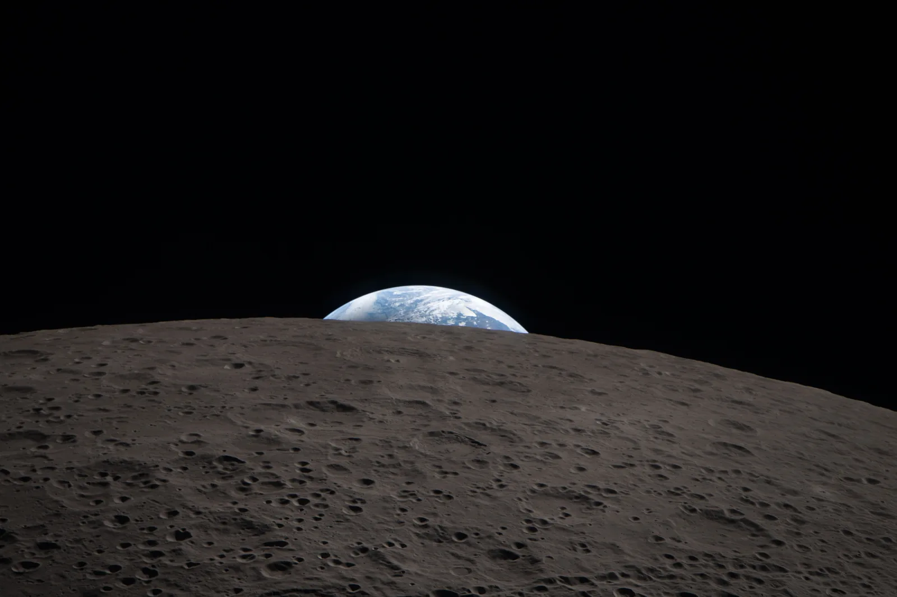

Kappaleiden välinen gravitaatiovoima
Miksi pudonnut omena syöksyy Maata kohti, mutta Maa ei näytä liikahtavankaan omenaa kohti?
Pohjatiedot
- Vuorovaikutuksessa kappaleet vaikuttavat toisiinsa yhtä suurilla ja vastakkaissuuntaisilla voimillaluku Vuorovaikutus ja voima: Newtonin ensimmäinen ja kolmas laki
- Kappaleen paino on $G = mg$, ja Maan pinnalla $g = 9{,}81\,\text{m/s}^2$luku Paino, kitka ja kalteva taso
- Tasaisessa ympyräliikkeessä kappaleella on normaalikiihtyvyys $a_\text{n} = \tfrac{v^2}{r}$ kohti radan keskipistettäluku Normaalikiihtyvyys ja ympyräliikkeen liikeyhtälö
Ydinpolku: etene vaiheiden mukaan. Ydinpolkuun kuuluvat laskujen lisäksi tutkimukset, selitykset ja kuvaajat. Valinnainen-merkityt tehtävät tarjoavat lisäharjoittelua. Valinnaisia tehtäviä 4.
Pohdinta
Syyskuun iltana omenapuun alta kuuluu tasaisin väliajoin tömähdys, kun kypsä omena irtoaa ja putoaa nurmikolle. Omena lähtee levosta ja kiihtyy alaspäin, kohti Maata. Isaac Newton pohti juuri tällaista tilannetta ja kysyi, ulottuuko sama veto, joka saa omenan putoamaan, Kuuhun asti.
Jos Maa vetää omenaa, vetääkö myös omena Maata? Ja jos vetää, miksi Maa ei liiku omenaa kohti?
Valinnainen Kertaa: ympyräliikkeen kiihtyvyys
Ennusta
Tee ennusteet ennen tutkimista 2 kysymystä
Ennuste 1: kumpi vetää enemmän?
Ennuste 2: kauemmas siirtäminen
Tutki
Simulaatio
Käyttöohje
Liukusäätimet muuttavat lohkareiden massoja $m_1$ ja $m_2$ sekä niiden keskipisteiden etäisyyttä $r$. Punaiset nuolet lohkareiden yläpuolella ovat lohkareisiin vaikuttavat gravitaatiovoimat $\overline{F}_1$ ja $\overline{F}_2$, oranssit nuolet niiden alapuolella lohkareiden kiihtyvyydet $\overline{a}_1$ ja $\overline{a}_2$. Oikean yläkulman janat näyttävät nuolten mittakaavan. Mittakaava vaihtuu, kun voimat tai kiihtyvyydet muuttuvat paljon, mutta saman väriset nuolet ovat aina samassa mittakaavassa. Kuvaaja kerää pisteen jokaisesta etäisyydestä, jolla olet käynyt; pisteet katoavat, kun muutat massaa tai painat Tyhjennä kuvaaja.
Mallin oletukset
Lohkareet ovat tasa-aineisia kivipalloja, joiden tiheys on $3000\,\text{kg/m}^3$, ja ne on piirretty mittakaavassa. Pallosymmetrinen kappale vetää toista ikään kuin sen massa olisi keskipisteessä, joten etäisyys mitataan keskipisteiden välillä. Lähellä ei ole muita kappaleita, joten lohkareisiin vaikuttaa vain niiden keskinäinen gravitaatio. Kuva näyttää voimat ja kiihtyvyydet yhdellä hetkellä: lohkareet eivät liiku, koska näin pienillä kiihtyvyyksillä ne siirtyisivät minuutissa enintään noin $0{,}3\,\text{mm}$. Luvut ovat mallin laskemia arvoja, eivät mittauksia.
Laskennan selitys
Voiman suuruus lasketaan Newtonin gravitaatiolaista $F = \gamma \tfrac{m_1 m_2}{r^2}$, missä $\gamma = 6{,}674 \cdot 10^{-11}\,\tfrac{\text{N}\cdot\text{m}^2}{\text{kg}^2}$ ja massat muutetaan kilogrammoiksi ($1\,\text{t} = 1000\,\text{kg}$). $F_1$ on lohkareeseen 1 ja $F_2$ lohkareeseen 2 vaikuttavan voiman suuruus. Kiihtyvyydet saadaan Newtonin toisesta laista: $a_1 = \tfrac{F_1}{m_1}$ ja $a_2 = \tfrac{F_2}{m_2}$. Voimat näytetään mikronewtoneina, $1\,\mu\text{N} = 10^{-6}\,\text{N}$, ja kiihtyvyydet nanometreinä sekunnissa toiseen, $1\,\text{nm/s}^2 = 10^{-9}\,\text{m/s}^2$.
Kaksi lohkaretta avaruudessa. Muuta massoja ja etäisyyttä ja vertaa voimanuolia keskenään ja kiihtyvyysnuolia keskenään.
Koe 1: vain toisen lohkareen massa muuttuu
Testaa ennuste 1. Lohkareen 1 massa $m_1 = 10\,\text{t}$ ja etäisyys $r = 4{,}0\,\text{m}$ pysyvät vakioina. Muuta vain massaa $m_2$ ja kirjaa voimat ja kiihtyvyydet ainakin kahdella massalla, esimerkiksi $2\,\text{t}$, $6\,\text{t}$ ja $10\,\text{t}$. Vertaa voimia $F_1$ ja $F_2$ keskenään. Mitä tapahtuu kiihtyvyyksille?
Alkutila: lohkareen 1 massa $m_1$ = $10\,\text{t}$, lohkareen 2 massa $m_2$ = $2\,\text{t}$, etäisyys $r$ = $4\,\text{m}$. Vakiona: lohkareen 1 massa $m_1$, etäisyys $r$. Muutetaan: lohkareen 2 massa $m_2$.
| lohkareen 2 massa $m_2$ | $F_1$ $(\mu\text{N})$ | $F_2$ $(\mu\text{N})$ | $a_1$ $(\text{nm/s}^2)$ | $a_2$ $(\text{nm/s}^2)$ |
|---|
Lisää tutkittavaa 3 tehtävää
Koe 2: vain etäisyys muuttuu
Testaa ennuste 2. Kummankin lohkareen massa on $10\,\text{t}$ ja pysyy vakiona. Muuta vain etäisyyttä $r$ ja kirjaa voima ainakin kolmella etäisyydellä, esimerkiksi $3{,}0\,\text{m}$, $6{,}0\,\text{m}$ ja $9{,}0\,\text{m}$. Seuraa samalla, millaisen kuvaajan pisteet muodostavat.
Alkutila: lohkareen 1 massa $m_1$ = $10\,\text{t}$, lohkareen 2 massa $m_2$ = $10\,\text{t}$, etäisyys $r$ = $3\,\text{m}$. Vakiona: lohkareen 1 massa $m_1$, lohkareen 2 massa $m_2$. Muutetaan: etäisyys $r$.
| etäisyys $r$ | $F_1$ $(\mu\text{N})$ |
|---|
Kuinka moninkertainen voima on etäisyydellä $3{,}0\,\text{m}$ verrattuna voimaan etäisyydellä $6{,}0\,\text{m}$? Laske taulukkosi lukemista.
Näytä ratkaisu
Annettu
simulaation lukemat $F(3{,}0\,\text{m}) = 742\,\mu\text{N}$ ja $F(6{,}0\,\text{m}) = 185\,\mu\text{N}$, kun $m_1 = m_2 = 10\,\text{t}$
Kysytty
voimien suhde $\tfrac{F(3{,}0\,\text{m})}{F(6{,}0\,\text{m})}$, ilman yksikköä
Periaate
Massat pysyvät samoina, joten suhde kertoo, miten pelkkä etäisyys vaikuttaa voimaan. Saman suureen suhde lasketaan jakamalla lukemat keskenään.
Kaava
suhde $= \dfrac{F(3{,}0\,\text{m})}{F(6{,}0\,\text{m})}$
Muunnokset
Ei tarvita: kumpikin voima on mikronewtoneina, ja yksikkö supistuu pois.
Sijoitus
suhde $= \dfrac{742\,\mu\text{N}}{185\,\mu\text{N}} = 4{,}01$
Vastaus
$4{,}0$
: voima on lähempänä neljä kertaa niin suuri. Kaksi merkitsevää numeroa riittää, koska lukemat on pyöristetty kolmeen numeroon.
Järkevyys
Gravitaatiolain mukaan $F \propto \tfrac{1}{r^2}$, joten etäisyyden puolittuminen $6{,}0\,\text{m}$:stä $3{,}0\,\text{m}$:iin kasvattaa voimaa $2^2 = 4$-kertaiseksi. Myös $F r^2$ on molemmissa sama:
Valinnainen Newtonin Kuu-koe
Tilastoaineisto · NASA, Moon Fact Sheet ja Earth Fact Sheet (nssdc.gsfc.nasa.gov), luettu 2026
Newton testasi gravitaatiolakiaan vertaamalla omenan ja Kuun kiihtyvyyksiä. Jos Maan veto heikkenee etäisyyden neliön mukaan, Kuun kiihtyvyyden pitäisi olla $\tfrac{1}{60^2}$ putoamiskiihtyvyydestä, koska Kuu on noin $60$ Maan säteen päässä Maan keskipisteestä.
| suure | arvo |
|---|---|
| Maan säde $R$ | $6378\,\text{km}$ |
| Kuun keskietäisyys Maan keskipisteestä $r$ | $384\,400\,\text{km}$ |
| Kuun kiertoaika $T$ | $27{,}32\,\text{vrk}$ |
| gravitaatiokentän voimakkuus Maan pinnalla $g$ | $9{,}80\,\text{m/s}^2$ |
Kuun kiihtyvyys voidaan laskea sen radasta luvun Normaalikiihtyvyys ja ympyräliikkeen liikeyhtälö tapaan, kun rata oletetaan ympyräksi.
Laske Kuun normaalikiihtyvyys $a_\text{n} = \tfrac{v^2}{r}$, kun Kuun ratanopeus on $v = \tfrac{2\pi r}{T}$. Anna vastaus yksikössä $\text{mm/s}^2$.
Vihje 1: ohjaava kysymys
Muunna ensin etäisyys metreiksi ja kiertoaika sekunneiksi: $1\,\text{vrk} = 24 \cdot 3600\,\text{s}$.
Vihje 2: mikä yhteys
Sijoittamalla $v = \tfrac{2\pi r}{T}$ saadaan $a_\text{n} = \tfrac{4\pi^2 r}{T^2}$.
Vihje 3: välivaihe
Näytä ratkaisu
Annettu
Kuun keskietäisyys $r = 384\,400\,\text{km}$, kiertoaika $T = 27{,}32\,\text{vrk}$; vertailuun $g = 9{,}80\,\text{m/s}^2$ ja $R = 6378\,\text{km}$
Kysytty
Kuun normaalikiihtyvyys $a_\text{n}$ yksikössä $\text{mm/s}^2$
Periaate
Kuu kiertää Maata lähes tasaisella vauhdilla lähes ympyrärataa, joten sillä on normaalikiihtyvyys kohti Maan keskipistettä. Ratanopeus saadaan yhden kierroksen matkasta ja ajasta.
Kaava
$a_\text{n} = \tfrac{v^2}{r}$ ja $v = \tfrac{2\pi r}{T}$, josta $a_\text{n} = \dfrac{4\pi^2 r}{T^2}$
Muunnokset
lopuksi $1\,\text{m/s}^2 = 1000\,\text{mm/s}^2$
Sijoitus
Vastaus
$2{,}72\,\text{mm/s}^2$
Kolme merkitsevää numeroa kuten etäisyydessä ja kiertoajassa.
Järkevyys
Neliölain ennuste on
Arvot eroavat alle prosentin, joten sama Maan veto, joka saa omenan putoamaan, riittää selittämään Kuun liikkeen.
Johtopäätös: voimat, kiihtyvyydet ja etäisyys
Kirjoita taulukoidesi perusteella: miten lohkareisiin vaikuttavat voimat suhtautuvat toisiinsa? Miksi lohkareiden kiihtyvyydet ovat erisuuret, ja kumman kiihtyvyys pysyi kokeessa 1 samana? Miten voima muuttuu, kun etäisyys kaksin- tai kolminkertaistuu?
Mallivastaus
Kokeessa 1 kumpaankin lohkareeseen vaikutti joka kerta yhtä suuri voima: $83{,}4\,\mu\text{N}$, kun $m_2 = 2\,\text{t}$, ja $250\,\mu\text{N}$, kun $m_2 = 6\,\text{t}$. Voima kasvoi samassa suhteessa kuin $m_2$. Kiihtyvyys $a = \tfrac{F}{m}$ oli suurempi kevyemmällä lohkareella. Lohkareen 2 kiihtyvyys pysyi samana, $41{,}7\,\text{nm/s}^2$, vaikka sen massa muuttui: kun massa kasvaa, voima kasvaa samassa suhteessa, joten kappaleen kiihtyvyys ei riipu sen omasta massasta. Kokeessa 2 voima pieneni neljäsosaan, kun etäisyys kaksinkertaistui ($742\,\mu\text{N}$ ja $185\,\mu\text{N}$), ja yhdeksäsosaan, kun se kolminkertaistui ($82{,}4\,\mu\text{N}$). Tulo $F r^2$ pysyi samana, joten voima on kääntäen verrannollinen etäisyyden neliöön. Luvut ovat mallin laskemia arvoja.
Arvioi oma vastauksesi
Rastita kohdat, jotka omassa vastauksessasi jo on.
Kertaa asia teoriasta ja harjoittele tehtävillä.
Teoria
Ydinajatus
Isaac Newton päätteli 1600-luvulla, että sama vuorovaikutus, joka saa omenan putoamaan, pitää myös Kuun radallaan. Tätä vuorovaikutusta kutsutaan gravitaatioksi: jokainen kappale, jolla on massaa, vetää jokaista muuta kappaletta puoleensa. Sinä ja pulpettisi vedätte toisianne, samoin kaksi vierekkäin istuvaa opiskelijaa. Arjessa tätä ei huomaa, koska voima on hyvin pieni, ellei toinen kappaleista ole valtava. Kahden ihmisen, $70\,\text{kg}$ ja $60\,\text{kg}$, välinen gravitaatiovoima metrin etäisyydellä on vain noin $0{,}28\,\mu\text{N}$. Maan veto saman ihmisen kohdalla on lähes $700\,\text{N}$.
Gravitaatio on vuorovaikutus, joten siihen pätee Newtonin kolmas laki. Maa vetää omenaa voimalla $\overline{F}_1$, ja omena vetää Maata yhtä suurella mutta vastakkaissuuntaisella voimalla $\overline{F}_2$. Suurempi kappale ei vedä pienempää voimakkaammin kuin pienempi suurempaa: voimat ovat aina yhtä suuret, $F_1 = F_2$.

Ero on kiihtyvyyksissä. Newtonin toisen lain mukaan kappaleen kiihtyvyys on $a = \tfrac{F}{m}$. Kun $0{,}20\,\text{kg}$:n omenaan vaikuttaa noin $1{,}96\,\text{N}$:n voima, omenan kiihtyvyys on noin $9{,}8\,\text{m/s}^2$. Sama voima antaa Maalle, jonka massa on $5{,}97 \cdot 10^{24}\,\text{kg}$, kiihtyvyyden noin $3 \cdot 10^{-25}\,\text{m/s}^2$. Maa todella liikahtaa omenaa kohti, mutta niin vähän, ettei sitä voi mitata.
Newtonin gravitaatiolaki
Kahden kappaleen välinen gravitaatiovoima on sitä suurempi, mitä suuremmat massat kappaleilla on, ja sitä pienempi, mitä kauempana ne ovat toisistaan. Newtonin gravitaatiolaki kertoo, että voima on suoraan verrannollinen kumpaankin massaan ja kääntäen verrannollinen etäisyyden neliöön:
$$F = \gamma \frac{m_1 m_2}{r^2}$$
missä $F$ on kumpaankin kappaleeseen vaikuttavan gravitaatiovoiman suuruus (N), $m_1$ ja $m_2$ kappaleiden massat (kg), $r$ kappaleiden keskipisteiden välinen etäisyys (m) ja $\gamma$ gravitaatiovakio, $\gamma = 6{,}674 \cdot 10^{-11}\,\tfrac{\text{N}\cdot\text{m}^2}{\text{kg}^2}$. Voima vaikuttaa kumpaankin kappaleeseen kohti toista kappaletta. Henry Cavendish määritti vuonna 1798 Maan keskitiheyttä mittaamalla lyijypallojen välistä heikkoa gravitaatiovuorovaikutusta. Hänen tuloksestaan voidaan johtaa gravitaatiovakion arvo.
Laki pätee sellaisenaan pistemäisille kappaleille. Se pätee myös tasa-aineisille palloille ja muille pallosymmetrisille kappaleille, kuten planeetoille ja tähdille, kun $r$ mitataan keskipisteiden välillä: tällainen kappale vetää ulkopuolisia kappaleita ikään kuin sen koko massa olisi keskipisteessä. Maan pinnalla seisovan ihmisen etäisyys Maan keskipisteestä on siis Maan säde.
Etäisyys on kaavassa toisessa potenssissa. Kun etäisyys kaksinkertaistuu, voima pienenee neljäsosaan, ja kun etäisyys kolminkertaistuu, yhdeksäsosaan. Kun taas toinen massa kaksinkertaistuu, myös voima kaksinkertaistuu. Gravitaatiovoima pienenee etäisyyden kasvaessa nopeasti, mutta se ei koskaan muutu tarkalleen nollaksi. Kuvaaja näyttää voiman, kun kummankin kappaleen massa on $10\,\text{t}$.
Painovoima ja gravitaatiokenttä
Kappaleen paino $G = mg$ on Maan kappaleeseen kohdistama gravitaatiovoima. Kun Maan massa on $M$ ja säde $R$, gravitaatiolaki antaa saman voiman, joten $mg = \gamma \tfrac{Mm}{R^2}$. Kappaleen massa $m$ supistuu pois, ja putoamiskiihtyvyydeksi jää $g = \gamma \tfrac{M}{R^2}$. Siksi kaikki kappaleet putoavat Maan pinnalla samalla kiihtyvyydellä, kun ilmanvastus jätetään huomiotta: raskaampaan kappaleeseen vaikuttaa suurempi voima, mutta sitä on myös vaikeampi kiihdyttää.
Gravitaatiokentän voimakkuus
Maa muuttaa ympäristöään niin, että jokaisessa pisteessä on valmiina tietty veto: siihen tuotuun kappaleeseen vaikuttaa voima $\overline{F} = m\overline{g}$. Tätä kutsutaan Maan gravitaatiokentäksi. Kentän voimakkuus etäisyydellä $r$ kappaleen keskipisteestä on
$$g = \gamma \frac{M}{r^2}$$
missä $M$ on kentän synnyttävän kappaleen massa (kg) ja $r$ etäisyys sen keskipisteestä (m). Kentän suunta on kohti kappaleen keskipistettä, ja voimakkuuden yksikkö on $\text{m/s}^2$. Jos kappaleeseen vaikuttaa vain gravitaatio, sen kiihtyvyys on Newtonin toisen lain mukaan $a = \tfrac{F}{m} = \tfrac{mg}{m} = g$. Gravitaatiokentän voimakkuus on siis sama asia kuin vapaasti putoavan kappaleen kiihtyvyys siinä kohdassa.
Kenttä eri taivaankappaleilla
Taulukon kentän voimakkuudet on laskettu kaavasta $g = \gamma \tfrac{M}{R^2}$ NASAn planeettataulukon (Planetary Fact Sheet) massoista ja päiväntasaajan säteistä. Maan arvo $9{,}80\,\text{m/s}^2$ on laskettu ilman Maan pyörimisen vaikutusta; mitattu arvo on hieman erilainen, ja tämän kirjan tehtävissä käytetään arvoa $9{,}81\,\text{m/s}^2$. Kappaleen massa on sama kaikkialla, mutta sen paino riippuu siitä, minkä taivaankappaleen kentässä se on.
| Kappale | massa $M$ (kg) | säde $R$ (km) | $g$ ($\text{m/s}^2$) |
|---|---|---|---|
| Kuu | $7{,}35 \cdot 10^{22}$ | $1738$ | $1{,}62$ |
| Mars | $6{,}42 \cdot 10^{23}$ | $3396$ | $3{,}71$ |
| Maa | $5{,}97 \cdot 10^{24}$ | $6378$ | $9{,}80$ |
| Jupiter | $1{,}90 \cdot 10^{27}$ | $71\,492$ | $24{,}8$ |
| Aurinko | $1{,}99 \cdot 10^{30}$ | $695\,700$ | $274$ |
Maan pinnalla mitattu putoamiskiihtyvyys vaihtelee välillä $9{,}78\text{–}9{,}83\,\text{m/s}^2$, koska Maa pyörii ja on hieman litistynyt. Tässä kirjassa käytetään arvoa $g = 9{,}81\,\text{m/s}^2$, kun putoamiskiihtyvyys Maan pinnalla tarvitaan.
Gravitaatio maailmankaikkeudessa
Gravitaatio on perusvuorovaikutuksista heikoin, mutta suurissa mittakaavoissa se on ratkaiseva. Sähköiset voimat ovat paljon voimakkaampia, mutta positiiviset ja negatiiviset varaukset kumoavat toistensa vaikutukset, joten suuret kappaleet ovat lähes sähköisesti neutraaleja. Gravitaatio taas on aina vetävä: jokainen massa lisää vetoa, eikä mikään kumoa sitä. Lisäksi gravitaation vaikutus ulottuu kauas, koska $\tfrac{1}{r^2}$ pienenee mutta ei koskaan muutu nollaksi.
Varhainen maailmankaikkeus oli lähes tasainen kaasupilvi. Kohdat, joissa ainetta oli hieman keskimääräistä enemmän, vetivät ympäröivää ainetta voimakkaammin puoleensa, joten ne tihenivät entisestään. Tihentymät kasvoivat kaasupilviksi, joiden keskiosat luhistuivat oman painonsa alla. Luhistuessaan kaasu tiivistyi ja kuumeni, kunnes sen keskustassa käynnistyivät ydinreaktiot ja syntyi tähti. Tähteä ympäröivään litteään kiekkoon jäänyt aine kasautui planeetoiksi. Gravitaatio kokoaa myös tähdet galakseiksi ja galaksit galaksijoukoiksi, ja se pitää planeetat radoillaan tähtensä ympärillä.
Yleinen virhekäsitys
”Maa vetää Kuuta voimakkaammin kuin Kuu Maata, koska Maa on paljon suurempi.” Gravitaatio on vuorovaikutus, joten Newtonin kolmannen lain mukaan voimat ovat aina yhtä suuret ja vastakkaissuuntaiset. Massojen ero näkyy kiihtyvyyksissä: sama voima kiihdyttää kevyempää kappaletta enemmän. Toinen yleinen käsitys on, että gravitaatio loppuu ilmakehän yläpuolella. Se kuitenkin vain heikkenee etäisyyden kasvaessa: esimerkiksi $300\,\text{km}$:n korkeudella kentän voimakkuus on vielä noin $8{,}9\,\text{m/s}^2$.
Tiivistelmä
- Kaikki kappaleet vetävät toisiaan puoleensa gravitaatiovoimalla $F = \gamma \tfrac{m_1 m_2}{r^2}$, missä $r$ on keskipisteiden välinen etäisyys ja $\gamma = 6{,}674 \cdot 10^{-11}\,\tfrac{\text{N}\cdot\text{m}^2}{\text{kg}^2}$.
- Kahden kappaleen väliset gravitaatiovoimat ovat yhtä suuret ja vastakkaissuuntaiset; kevyempi kappale kiihtyy enemmän.
- Kun etäisyys kaksinkertaistuu, voima pienenee neljäsosaan.
- Gravitaatiokentän voimakkuus $g = \gamma \tfrac{M}{r^2}$ on vapaasti putoavan kappaleen kiihtyvyys, yksikkö $\text{m/s}^2$; kappaleen paino on $G = mg$.
- Gravitaatio on aina vetävä ja ulottuu kauas, joten se kokoaa ainetta tähdiksi, planeetoiksi ja galakseiksi.
Valinnainen Palaa ennusteisiisi
Vertaa ennusteitasi kokeiden mallin arvoihin ja gravitaatiolakiin. Palaa sitten alun kysymykseen: vetääkö omena Maata, ja miksi Maa ei liiku omenaa kohti?
Muuttaisitko ennustettasi?
Esimerkit
Kun olet opiskellut luvun teorian, siirry ohjattuihin esimerkkeihin. Ensimmäisessä seuraat mallilaskua vaihe vaiheelta, seuraavissa teet valinnat itse, ja vihjeet auttavat, jos jäät jumiin.
Esimerkki 1: Maan ja Kuun vetovoima
Kuinka suurella voimalla Maa ja Kuu vetävät toisiaan? Maan massa on $5{,}97 \cdot 10^{24}\,\text{kg}$, Kuun massa $7{,}35 \cdot 10^{22}\,\text{kg}$ ja niiden keskipisteiden keskimääräinen etäisyys $3{,}84 \cdot 10^{5}\,\text{km}$.
Vaihe 1/7
Tunnetut ja kysytty. Maan massa $M = 5{,}97 \cdot 10^{24}\,\text{kg}$, Kuun massa $m = 7{,}35 \cdot 10^{22}\,\text{kg}$, etäisyys $r = 3{,}84 \cdot 10^{5}\,\text{km}$ ja gravitaatiovakio $\gamma = 6{,}674 \cdot 10^{-11}\,\tfrac{\text{N}\cdot\text{m}^2}{\text{kg}^2}$. Kysytään gravitaatiovoiman suuruutta $F$.
Vaihe 2/7
Periaate. Maa ja Kuu ovat lähes pallosymmetrisiä, joten niiden välistä voimaa voidaan laskea Newtonin gravitaatiolailla, kun $r$ on keskipisteiden välinen etäisyys. Newtonin kolmannen lain mukaan sama voima vaikuttaa sekä Kuuhun että Maahan.
Vaihe 3/7
Kaava ratkaistuna. Kysytty voima on jo ratkaistuna:
$$F = \gamma \frac{M m}{r^2}$$
Vaihe 4/7
Yksikkömuunnokset. Etäisyys muutetaan metreiksi:
Massat ovat jo kilogrammoina.
Vaihe 5/7
Sijoitus. Sijoitetaan arvot yksiköineen:
$$\begin{aligned} F &= \gamma \frac{M m}{r^2} \\ &= 6{,}674 \cdot 10^{-11}\,\tfrac{\text{N}\cdot\text{m}^2}{\text{kg}^2} \\ &\quad \cdot \frac{5{,}97 \cdot 10^{24}\,\text{kg} \cdot 7{,}35 \cdot 10^{22}\,\text{kg}}{(3{,}84 \cdot 10^{8}\,\text{m})^2} \\ &\approx 1{,}99 \cdot 10^{20}\,\text{N} \end{aligned}$$
Vaihe 6/7
Tulos. Maa ja Kuu vetävät toisiaan voimalla $F \approx 1{,}99 \cdot 10^{20}\,\text{N}$. Vastaus annetaan kolmella merkitsevällä numerolla, koska massat ja etäisyys on annettu kolmen numeron tarkkuudella.
Vaihe 7/7
Järkevyys. Pyöristetyillä luvuilla
joten suuruusluokka on oikea. Voima on valtava, mutta Kuun kiihtyvyys on silti vain
koska Kuun massa on suuri.
Valinnainen Esimerkki 2: Etsi virhe
Esimerkki 3: Sovella uuteen tilanteeseen
Avaruusluotain nousee suoraan ylöspäin Maan pinnalta. Kuinka korkealla Maan pinnan yläpuolella Maan gravitaatiokentän voimakkuus on puolet sen arvosta Maan pinnalla? Maan säde on $6378\,\text{km}$. Anna vastaus kilometreinä.
Vihje 1: ohjaava kysymys
Miten kentän voimakkuus riippuu etäisyydestä $r$ Maan keskipisteestä? Kirjoita ehto $g(r) = \tfrac{1}{2} g(R)$ kaavan $g = \gamma \tfrac{M}{r^2}$ avulla.
Vihje 2: mikä yhteys
$\gamma \tfrac{M}{r^2} = \tfrac{1}{2} \gamma \tfrac{M}{R^2}$, josta $r^2 = 2R^2$ eli $r = \sqrt{2}\,R$. Korkeus pinnasta on $h = r - R$.
Vihje 3: välivaihe
Näytä ratkaisu
Annettu
Maan säde $R = 6378\,\text{km}$; kentän voimakkuus korkeudella $h$ on puolet pinnan arvosta
Kysytty
korkeus $h$ Maan pinnasta kilometreinä
Periaate
Maan gravitaatiokentän voimakkuus on $g = \gamma \tfrac{M}{r^2}$, missä $r$ on etäisyys Maan keskipisteestä, koska Maa vetää kuin sen massa olisi keskipisteessä. Pinnalla $r = R$, korkeudella $h$ taas $r = R + h$. Maan massaa ei tarvita, koska se supistuu pois.
Kaava
josta $(R + h)^2 = 2R^2$ ja $h = (\sqrt{2} - 1) R$
Muunnokset
Ei tarvita: säde on kilometreinä, ja vastaus pyydetään kilometreinä.
Sijoitus
Vastaus
$2640\,\text{km}$
Kolmen merkitsevän numeron tarkkuudella; säteen neljällä numerolla tulos olisi $2642\,\text{km}$.
Järkevyys
Tarkistus:
Korkeus on pienempi kuin Maan säde, mikä sopii siihen, että kaksinkertainen etäisyys keskipisteestä pienentäisi kentän jo neljäsosaan.
Kertaa luvun käsitteet
Jos valitset Kertaa myöhemmin, kortti siirtyy kertauspakkaasi.
- Gravitaatiovoima
- Voima, jolla kaksi massallista kappaletta vetävät toisiaan puoleensa.
- Gravitaatiovakio
- Luonnonvakio, joka määrää gravitaatiovuorovaikutuksen voimakkuuden.$$\gamma \approx 6{,}67 \cdot 10^{-11}\,\text{N}\cdot\text{m}^2/\text{kg}^2$$
- Gravitaatiokenttä
- Massallisen kappaleen ympärillä oleva alue, jossa toiseen kappaleeseen vaikuttaa gravitaatiovoima.
- Gravitaatiokentän voimakkuus
- Kertoo kappaleeseen vaikuttavan gravitaatiovoiman massayksikköä kohti.$$g = \dfrac{F}{m}$$
Tehtävät
Taso 1 · perusharjoitus 8 tehtävää
Yksi kaava tai yksi päättelyaskel. Ydintehtävät ensin, loput lisäharjoitusta.
- Tehtävä 5-1
Kaksi opiskelijaa istuu vierekkäin penkillä. Heidän massansa ovat $70\,\text{kg}$ ja $55\,\text{kg}$, ja heidän painopisteidensä etäisyys on $0{,}80\,\text{m}$.
Kuinka suuri gravitaatiovoima heidän välillään on? Käsittele opiskelijoita pistemäisinä kappaleina ja anna vastaus mikronewtoneina ($1\,\mu\text{N} = 10^{-6}\,\text{N}$).
Vastaus
$0{,}40\,\mu\text{N}$
Näytä ratkaisu
Annettu
massat $m_1 = 70\,\text{kg}$ ja $m_2 = 55\,\text{kg}$, painopisteiden etäisyys $r = 0{,}80\,\text{m}$, gravitaatiovakio $\gamma = 6{,}674 \cdot 10^{-11}\,\tfrac{\text{N}\cdot\text{m}^2}{\text{kg}^2}$
Kysytty
opiskelijoiden välinen gravitaatiovoima $F$ mikronewtoneina
Periaate
Kaikki kappaleet vetävät toisiaan Newtonin gravitaatiolain mukaisesti. Kun opiskelijoita käsitellään pistemäisinä, etäisyys mitataan painopisteiden välillä, ja sama voima vaikuttaa kumpaankin.
Kaava
$F = \gamma \dfrac{m_1 m_2}{r^2}$
Muunnokset
Massat ja etäisyys ovat SI-yksiköissä. Lopuksi $1\,\mu\text{N} = 10^{-6}\,\text{N}$.
Sijoitus
$F$$= 6{,}674 \cdot 10^{-11}\,\tfrac{\text{N}\cdot\text{m}^2}{\text{kg}^2} \cdot \dfrac{70\,\text{kg} \cdot 55\,\text{kg}}{(0{,}80\,\text{m})^2}$$= 4{,}015 \cdot 10^{-7}\,\text{N}$$= 0{,}4015\,\mu\text{N}$Vastaus
$0{,}40\,\mu\text{N}$
Kaksi merkitsevää numeroa kuten massoissa ja etäisyydessä $0{,}80\,\text{m}$.
Järkevyys
Voima vastaa noin $0{,}04\,\text{mg}$:n massaisen hiukkasen painoa, joten sitä ei arjessa huomaa. Suuruusluokka on sama kuin luvun esimerkissä, jossa kahden ihmisen välinen voima metrin etäisyydellä oli noin $0{,}28\,\mu\text{N}$; tässä etäisyys on pienempi, joten voima on hieman suurempi.
- Tehtävä 5-2
Satamassa on vierekkäin kaksi risteilyalusta, joiden massat ovat $5{,}0 \cdot 10^{7}\,\text{kg}$ ja $3{,}0 \cdot 10^{7}\,\text{kg}$. Alusten painopisteiden etäisyys on $200\,\text{m}$. Kuinka suurella gravitaatiovoimalla alukset vetävät toisiaan? Käsittele aluksia pistemäisinä kappaleina.
Vastaus
$2{,}5\,\text{N}$
Näytä ratkaisu
Annettu
alusten massat $m_1 = 5{,}0 \cdot 10^{7}\,\text{kg}$ ja $m_2 = 3{,}0 \cdot 10^{7}\,\text{kg}$, painopisteiden etäisyys $r = 200\,\text{m}$, $\gamma = 6{,}674 \cdot 10^{-11}\,\tfrac{\text{N}\cdot\text{m}^2}{\text{kg}^2}$
Kysytty
alusten välinen gravitaatiovoima $F$ newtoneina
Periaate
Alukset vetävät toisiaan Newtonin gravitaatiolain mukaisesti. Tehtävässä alukset käsitellään pistemäisinä kappaleina. Todellisuudessa alukset ovat yhtä pitkiä kuin niiden etäisyys, joten tulos on vain suuruusluokka-arvio.
Kaava
$F = \gamma \dfrac{m_1 m_2}{r^2}$
Muunnokset
Ei tarvita: massat ovat kilogrammoina ja etäisyys metreinä.
Sijoitus
$F$$= 6{,}674 \cdot 10^{-11}\,\tfrac{\text{N}\cdot\text{m}^2}{\text{kg}^2} \cdot \dfrac{5{,}0 \cdot 10^{7}\,\text{kg} \cdot 3{,}0 \cdot 10^{7}\,\text{kg}}{(200\,\text{m})^2}$$= 2{,}503\,\text{N}$Vastaus
$2{,}5\,\text{N}$
Kaksi merkitsevää numeroa kuten massoissa.
Järkevyys
Pyöristetyillä luvuilla
$7 \cdot 10^{-11} \cdot \tfrac{1{,}5 \cdot 10^{15}}{4 \cdot 10^{4}}\,\text{N}$$\approx 2{,}6\,\text{N}$Valtavienkin alusten välinen veto on vain noin $250\,\text{g}$:n kappaleen painon luokkaa, mutta köysien ja veden voimiin verrattuna se on mitätön.
- Tehtävä 5-3Ydintehtävä
Merkurius-planeetan massa on $3{,}30 \cdot 10^{23}\,\text{kg}$ ja säde $2{,}44 \cdot 10^{6}\,\text{m}$. Kuinka suuri on gravitaatiokentän voimakkuus Merkuriuksen pinnalla?
Vastaus
$3{,}70\,\text{m/s}^2$
Näytä ratkaisu
Annettu
Merkuriuksen massa $M = 3{,}30 \cdot 10^{23}\,\text{kg}$ ja säde $R = 2{,}44 \cdot 10^{6}\,\text{m}$, $\gamma = 6{,}674 \cdot 10^{-11}\,\tfrac{\text{N}\cdot\text{m}^2}{\text{kg}^2}$
Kysytty
gravitaatiokentän voimakkuus $g$ Merkuriuksen pinnalla
Periaate
Planeetta on likimain pallosymmetrinen, joten se vetää kuin sen massa olisi keskipisteessä. Pinnalla etäisyys keskipisteestä on planeetan säde.
Kaava
$g = \gamma \dfrac{M}{R^2}$
Muunnokset
Ei tarvita: massa on kilogrammoina ja säde metreinä, joten tulos on yksikössä $\text{m/s}^2$.
Sijoitus
$g$$= 6{,}674 \cdot 10^{-11}\,\tfrac{\text{N}\cdot\text{m}^2}{\text{kg}^2} \cdot \dfrac{3{,}30 \cdot 10^{23}\,\text{kg}}{(2{,}44 \cdot 10^{6}\,\text{m})^2}$$= 3{,}699\,\text{m/s}^2$Vastaus
$3{,}70\,\text{m/s}^2$
Kolme merkitsevää numeroa kuten massassa ja säteessä.
Järkevyys
Merkurius on pienempi ja kevyempi kuin Maa, joten kentän pitää olla heikompi kuin $9{,}81\,\text{m/s}^2$. Tulos on lähes sama kuin Marsilla ($3{,}71\,\text{m/s}^2$), joka on Merkuriusta suurempi mutta myös massiivisempi.
- Tehtävä 5-4
Marsiin laskeutuneen mönkijän massa on $1025\,\text{kg}$. Marsin massa on $6{,}42 \cdot 10^{23}\,\text{kg}$ ja säde $3{,}40 \cdot 10^{6}\,\text{m}$. Kuinka suurella gravitaatiovoimalla Mars vetää pinnallaan olevaa mönkijää? Anna vastaus kilonewtoneina.
Vastaus
$3{,}80\,\text{kN}$
Näytä ratkaisu
Annettu
mönkijän massa $m = 1025\,\text{kg}$, Marsin massa $M = 6{,}42 \cdot 10^{23}\,\text{kg}$ ja säde $R = 3{,}40 \cdot 10^{6}\,\text{m}$, $\gamma = 6{,}674 \cdot 10^{-11}\,\tfrac{\text{N}\cdot\text{m}^2}{\text{kg}^2}$
Kysytty
Marsin mönkijään kohdistama gravitaatiovoima $F$ kilonewtoneina
Periaate
Mars on likimain pallosymmetrinen, joten sen ja mönkijän välinen voima saadaan gravitaatiolaista, kun etäisyys on Marsin säde.
Kaava
$F = \gamma \dfrac{M m}{R^2}$
Muunnokset
Suureet ovat SI-yksiköissä. Lopuksi $1\,\text{kN} = 1000\,\text{N}$.
Sijoitus
$F$$= 6{,}674 \cdot 10^{-11}\,\tfrac{\text{N}\cdot\text{m}^2}{\text{kg}^2} \cdot \dfrac{6{,}42 \cdot 10^{23}\,\text{kg} \cdot 1025\,\text{kg}}{(3{,}40 \cdot 10^{6}\,\text{m})^2}$$= 3799\,\text{N}$$= 3{,}799\,\text{kN}$Vastaus
$3{,}80\,\text{kN}$
Kolme merkitsevää numeroa kuten Marsin massassa ja säteessä.
Järkevyys
Toinen reitti: mönkijän paino Marsissa on
$mg$$= 1025\,\text{kg} \cdot 3{,}71\,\text{m/s}^2$$\approx 3800\,\text{N}$mikä on vain noin kaksi viidesosaa sen painosta Maassa ($10{,}1\,\text{kN}$).
- Tehtävä 5-5
Kahden avaruusaluksen välinen gravitaatiovoima on $36\,\mu\text{N}$. Alukset loittonevat toisistaan niin, että niiden keskipisteiden etäisyys kolminkertaistuu. Kuinka suuri gravitaatiovoima on nyt? Anna vastaus mikronewtoneina.
Vastaus
$4{,}0\,\mu\text{N}$
Näytä ratkaisu
Annettu
alkuperäinen voima $F = 36\,\mu\text{N}$; etäisyys kasvaa arvosta $r$ arvoon $3r$, massat pysyvät samoina
Kysytty
uusi gravitaatiovoima $F'$ mikronewtoneina
Periaate
Newtonin gravitaatiolain mukaan voima on kääntäen verrannollinen etäisyyden neliöön. Kun massat eivät muutu, voimien suhde riippuu vain etäisyyksien suhteesta.
Kaava
$\dfrac{F'}{F}$$= \dfrac{r^2}{(3r)^2}$$= \dfrac{1}{9}$josta $F' = \dfrac{F}{9}$
Muunnokset
Ei tarvita: voima pysyy mikronewtoneina.
Sijoitus
$F'$$= \dfrac{36\,\mu\text{N}}{9}$$= 4{,}0\,\mu\text{N}$Vastaus
$4{,}0\,\mu\text{N}$
Kaksi merkitsevää numeroa kuten voimassa $36\,\mu\text{N}$.
Järkevyys
Voima pienenee, kun alukset loittonevat, alle kolmasosaan ($12\,\mu\text{N}$), koska etäisyys on kaavassa toisessa potenssissa.
- Tehtävä 5-6Ydintehtävä
Maa vetää Kuuta gravitaatiovoimalla. Kuinka suurella voimalla Kuu vetää Maata?
Vastaus
Yhtä suurella voimalla, koska voimat ovat saman vuorovaikutuksen vastavoimia.
Näytä ratkaisu
Kysytty
kuinka suurella voimalla Kuu vetää Maata, kun Maa vetää Kuuta gravitaatiovoimalla.
Periaate
Gravitaatio on kahden kappaleen välinen vuorovaikutus. Newtonin kolmannen lain mukaan vuorovaikutuksen osapuolet vaikuttavat toisiinsa yhtä suurilla ja vastakkaissuuntaisilla voimilla, ja Newtonin gravitaatiolain mukaan voiman suuruus on $F = \gamma \tfrac{m_1 m_2}{r^2}$, jossa kumpikin massa on tulossa mukana.
Mallivastaus
Kuu vetää Maata täsmälleen yhtä suurella voimalla kuin Maa vetää Kuuta, koska voimat ovat saman vuorovaikutuksen vastavoimia. Gravitaatiolaissa massat ovat symmetrisessä tulossa $m_1 m_2$, joten voima on kummallekin kappaleelle sama. Massojen ero ei näy voimassa vaan kiihtyvyydessä: Kuun kiihtyvyys on Maan kiihtyvyyttä noin $81$-kertainen, koska sama voima vaikuttaa Maata noin $81$ kertaa kevyempään kappaleeseen (Maan massa on $81$ Kuun massaa). Liike ei vaikuta voimaan, ja pienikin kappale vetää suurta.
- Tehtävä 5-7
Kahden kappaleen välinen gravitaatiovoima on $F$. Sitten toisen kappaleen massa kaksinkertaistuu ja kappaleiden keskipisteiden etäisyys kaksinkertaistuu. Mikä on uusi gravitaatiovoima?
Vastaus
Voima on $\tfrac{F}{2}$, koska massa kaksinkertaistaa voiman ja etäisyys pienentää sen neljäsosaan.
Näytä ratkaisu
Kysytty
mikä on gravitaatiovoima, kun toisen kappaleen massa ja kappaleiden etäisyys kaksinkertaistuvat.
Periaate
Newtonin gravitaatiolain $F = \gamma \tfrac{m_1 m_2}{r^2}$ mukaan voima on suoraan verrannollinen massojen tuloon ja kääntäen verrannollinen etäisyyden neliöön. Kumpikin muutos kerrotaan omalla kertoimellaan.
Mallivastaus
Kun toinen massa kaksinkertaistuu, voima kaksinkertaistuu. Kun etäisyys kaksinkertaistuu, voima pienenee neljäsosaan, koska etäisyys on kaavassa toisessa potenssissa. Uusi voima on $F' = \tfrac{2}{2^2}\,F = \tfrac{1}{2}\,F$ eli voima puolittuu. Muutokset eivät kumoa toisiaan, koska etäisyyden vaikutus on voimakkaampi. Pelkkä massan muutos antaisi kertoimen $2$ ja pelkkä etäisyyden muutos kertoimen $\tfrac{1}{4}$, mutta kumpikin muutos on huomioitava.
- Tehtävä 5-8
Opiskelija laskee satelliittiin kohdistuvaa gravitaatiovoimaa. Satelliitti on $400\,\text{km}$:n korkeudella Maan pinnan yläpuolella.
Opiskelija sijoittaa Newtonin gravitaatiolakiin etäisyydeksi $r = 400\,\text{km}$ ja saa voimaksi moninkertaisen arvon oikeaan verrattuna. Mikä on hänen virheensä?
Vastaus
Hän mittaa etäisyyden pinnalta, vaikka sen pitää olla etäisyys Maan keskipisteestä.
Näytä ratkaisu
Kysytty
mikä virhe opiskelijan laskussa on, kun hän käyttää etäisyytenä $r = 400\,\text{km}$ ja saa liian suuren voiman.
Periaate
Newtonin gravitaatiolaissa $r$ on kappaleiden keskipisteiden välinen etäisyys. Pallosymmetrinen Maa vetää ulkopuolista kappaletta kuin sen koko massa olisi keskipisteessä, joten $r$ mitataan Maan keskipisteestä, ei pinnalta.
Mallivastaus
Opiskelija käyttää korkeutta pinnasta, vaikka etäisyys pitää mitata Maan keskipisteestä satelliittiin. Oikea etäisyys on Maan säde plus korkeus, noin $6378\,\text{km} + 400\,\text{km} \approx 6800\,\text{km}$. Opiskelijan etäisyys on noin $17$ kertaa liian pieni, joten voima on noin $17^2 \approx 290$ kertaa liian suuri, mikä sopii tehtävän tietoon, että tulos on moninkertainen. Gravitaatiolaki pätee avaruudessa, voimaa ei jaeta kahtia eikä etäisyyttä anneta Maan säteinä, joten ne eivät ole virheitä.
Taso 2 · soveltava harjoitus 8 tehtävää
Kaksi vaihetta, mittausaineiston käsittely, yksikkömuunnos tai kaavan ratkaiseminen. Ydintehtävät ensin, loput lisäharjoitusta.
- Tehtävä 5-9Ydintehtävä
Laboratoriossa mitataan kahden samanmassaisen lyijypallon välistä gravitaatiovoimaa. Kun pallojen keskipisteiden etäisyys on $0{,}40\,\text{m}$, voima on $0{,}60\,\mu\text{N}$. Kuinka suuri on kummankin pallon massa?
Vastaus
$38\,\text{kg}$
Näytä ratkaisu
Annettu
pallojen keskipisteiden etäisyys $r = 0{,}40\,\text{m}$, voima $F = 0{,}60\,\mu\text{N}$, massat yhtä suuret $m_1 = m_2 = m$, $\gamma = 6{,}674 \cdot 10^{-11}\,\tfrac{\text{N}\cdot\text{m}^2}{\text{kg}^2}$
Kysytty
kummankin pallon massa $m$
Periaate
Lyijypallot ovat tasa-aineisia palloja, joten gravitaatiolaki pätee, kun $r$ on keskipisteiden etäisyys. Koska massat ovat yhtä suuret, laissa on tulo $m \cdot m = m^2$, josta massa ratkaistaan.
Kaava
$F = \gamma \dfrac{m^2}{r^2}$, josta $m = r\sqrt{\dfrac{F}{\gamma}}$
Muunnokset
$F$$= 0{,}60\,\mu\text{N}$$= 0{,}60 \cdot 10^{-6}\,\text{N}$Sijoitus
$m$$= 0{,}40\,\text{m} \cdot \sqrt{\dfrac{0{,}60 \cdot 10^{-6}\,\text{N}}{6{,}674 \cdot 10^{-11}\,\tfrac{\text{N}\cdot\text{m}^2}{\text{kg}^2}}}$$= 0{,}40\,\text{m} \cdot 94{,}82\,\tfrac{\text{kg}}{\text{m}}$$= 37{,}93\,\text{kg}$Vastaus
$38\,\text{kg}$
Kaksi merkitsevää numeroa kuten voimassa ja etäisyydessä.
Järkevyys
Tarkistus sijoittamalla takaisin:
$6{,}674 \cdot 10^{-11} \cdot \tfrac{38^2}{0{,}40^2}\,\text{N}$$\approx 6{,}0 \cdot 10^{-7}\,\text{N}$Lyijyn tiheys on noin $11\,300\,\text{kg/m}^3$, joten $38\,\text{kg}$:n pallon säde on noin $9\,\text{cm}$: pallot mahtuvat hyvin $0{,}40\,\text{m}$:n etäisyydelle toisistaan.
- Tehtävä 5-10
Venuksen pinnalla gravitaatiokentän voimakkuus on $8{,}87\,\text{m/s}^2$, ja Venuksen säde on $6052\,\text{km}$. Kuinka moninkertainen Venuksen massa on Maan massaan $5{,}97 \cdot 10^{24}\,\text{kg}$ verrattuna?
Vastaus
$0{,}815$
Näytä ratkaisu
Annettu
Venuksen pinnalla $g = 8{,}87\,\text{m/s}^2$, säde $R = 6052\,\text{km}$, Maan massa $M_\text{Maa} = 5{,}97 \cdot 10^{24}\,\text{kg}$, $\gamma = 6{,}674 \cdot 10^{-11}\,\tfrac{\text{N}\cdot\text{m}^2}{\text{kg}^2}$
Kysytty
Venuksen massan suhde Maan massaan, $\tfrac{M}{M_\text{Maa}}$, ilman yksikköä
Periaate
Pallosymmetrisen planeetan gravitaatiokentän voimakkuus pinnalla on $g = \gamma \tfrac{M}{R^2}$, joten mitatusta $g$:stä ja säteestä voidaan ratkaista planeetan massa. Sen jälkeen massaa verrataan Maan massaan jakamalla.
Kaava
$g = \gamma \dfrac{M}{R^2}$, josta $M = \dfrac{g R^2}{\gamma}$ ja suhde
$\dfrac{M}{M_\text{Maa}}$$= \dfrac{g R^2}{\gamma M_\text{Maa}}$Muunnokset
$R$$= 6052\,\text{km}$$= 6052 \cdot 10^{3}\,\text{m}$$= 6{,}052 \cdot 10^{6}\,\text{m}$Sijoitus
$R^2$$= (6{,}052 \cdot 10^{6}\,\text{m})^2$$= 3{,}6627 \cdot 10^{13}\,\text{m}^2$$g R^2$$= 8{,}87\,\text{m/s}^2 \cdot 3{,}6627 \cdot 10^{13}\,\text{m}^2$$= 3{,}2488 \cdot 10^{14}\,\text{m}^3/\text{s}^2$$M$$= \dfrac{g R^2}{\gamma}$$= \dfrac{3{,}2488 \cdot 10^{14}\,\text{m}^3/\text{s}^2}{6{,}674 \cdot 10^{-11}\,\tfrac{\text{N}\cdot\text{m}^2}{\text{kg}^2}}$$= 4{,}868 \cdot 10^{24}\,\text{kg}$$\dfrac{M}{M_\text{Maa}}$$= \dfrac{4{,}868 \cdot 10^{24}\,\text{kg}}{5{,}97 \cdot 10^{24}\,\text{kg}}$$= 0{,}8154$Vastaus
$0{,}815$
Kolme merkitsevää numeroa kuten kentän voimakkuudessa $8{,}87\,\text{m/s}^2$.
Järkevyys
Venus on lähes Maan kokoinen ja sen kenttä on vähän heikompi kuin Maan, joten massan pitää olla vähän pienempi kuin Maan. NASAn taulukon mukaan Venuksen massa on $4{,}87 \cdot 10^{24}\,\text{kg}$, mikä vastaa tulosta.
- Tehtävä 5-11
Avaruusluotain, jonka massa on $1200\,\text{kg}$, lähtee Maasta kohti Marsia.
Millä korkeudella Maan pinnan yläpuolella Maan luotaimeen kohdistama gravitaatiovoima on $1{,}00\,\text{kN}$? Maan massa on $5{,}97 \cdot 10^{24}\,\text{kg}$ ja säde $6378\,\text{km}$. Anna vastaus kilometreinä.
Vastaus
$15\,500\,\text{km}$
Näytä ratkaisu
Annettu
luotaimen massa $m = 1200\,\text{kg}$, voima $F = 1{,}00\,\text{kN}$, Maan massa $M = 5{,}97 \cdot 10^{24}\,\text{kg}$ ja säde $R = 6378\,\text{km}$, $\gamma = 6{,}674 \cdot 10^{-11}\,\tfrac{\text{N}\cdot\text{m}^2}{\text{kg}^2}$
Kysytty
korkeus $h$ Maan pinnasta kilometreinä
Periaate
Maa vetää luotainta kuin sen massa olisi keskipisteessä, joten gravitaatiolaista saadaan ensin etäisyys $r$ Maan keskipisteestä. Korkeus pinnasta on tämä etäisyys vähennettynä Maan säteellä.
Kaava
$F = \gamma \dfrac{M m}{r^2}$, josta
$r$$= \sqrt{\dfrac{\gamma M m}{F}}$$h$$= r - R$$= \sqrt{\dfrac{\gamma M m}{F}} - R$Muunnokset
$F$$= 1{,}00\,\text{kN}$$= 1000\,\text{N}$$R$$= 6378\,\text{km}$$= 6{,}378 \cdot 10^{6}\,\text{m}$lopuksi $1\,\text{km} = 1000\,\text{m}$
Sijoitus
Osoittaja on
$\gamma M m$$= 6{,}674 \cdot 10^{-11}\,\tfrac{\text{N}\cdot\text{m}^2}{\text{kg}^2} \cdot 5{,}97 \cdot 10^{24}\,\text{kg} \cdot 1200\,\text{kg}$$= 4{,}7812 \cdot 10^{17}\,\text{N}\cdot\text{m}^2$joten
$r$$= \sqrt{\dfrac{4{,}7812 \cdot 10^{17}\,\text{N}\cdot\text{m}^2}{1000\,\text{N}}}$$= 2{,}1866 \cdot 10^{7}\,\text{m}$$h$$= 2{,}1866 \cdot 10^{7}\,\text{m} - 6{,}378 \cdot 10^{6}\,\text{m}$$= 1{,}5488 \cdot 10^{7}\,\text{m}$$= 15\,488\,\text{km}$Vastaus
$15\,500\,\text{km}$
Kolme merkitsevää numeroa kuten voimassa $1{,}00\,\text{kN}$.
Järkevyys
Maan pinnalla luotaimen paino on $1200\,\text{kg} \cdot 9{,}81\,\text{m/s}^2 \approx 11{,}8\,\text{kN}$. Voima $1{,}00\,\text{kN}$ on noin $\tfrac{1}{11{,}8}$ siitä, joten etäisyyden keskipisteestä pitää olla $\sqrt{11{,}8} \approx 3{,}4$ Maan sädettä: $3{,}4 \cdot 6378\,\text{km} \approx 21\,900\,\text{km}$, mikä vastaa arvoa $r$.
- Tehtävä 5-12
Matkustajakone lentää $11{,}0\,\text{km}$:n korkeudella. Kuinka monta prosenttia pienempi Maan gravitaatiokentän voimakkuus on siellä kuin Maan pinnalla? Maan säde on $6378\,\text{km}$.
Vastaus
$0{,}344\,\%$
Näytä ratkaisu
Annettu
lentokorkeus $h = 11{,}0\,\text{km}$, Maan säde $R = 6378\,\text{km}$
Kysytty
kuinka monta prosenttia pienempi kentän voimakkuus $g_h$ on kuin pinnalla $g_0$
Periaate
Maan gravitaatiokentän voimakkuus on kääntäen verrannollinen etäisyyden neliöön Maan keskipisteestä. Kun lasketaan suhde $\tfrac{g_h}{g_0}$, $\gamma$ ja Maan massa supistuvat pois, joten niitä ei tarvita.
Kaava
$\dfrac{g_h}{g_0}$$= \dfrac{\gamma \tfrac{M}{(R + h)^2}}{\gamma \tfrac{M}{R^2}}$$= \left(\dfrac{R}{R + h}\right)^2$josta suhteellinen muutos on $1 - \left(\dfrac{R}{R + h}\right)^2$
Muunnokset
Ei tarvita: säde ja korkeus ovat kumpikin kilometreinä, ja yksikkö supistuu. Lopuksi suhde muutetaan prosenteiksi kertomalla luvulla $100\,\%$.
Sijoitus
$1 - \left(\dfrac{6378\,\text{km}}{6378\,\text{km} + 11{,}0\,\text{km}}\right)^2$$= 1 - 0{,}996560$$= 0{,}003440$$= 0{,}3440\,\%$Vastaus
$0{,}344\,\%$
Kolme merkitsevää numeroa kuten korkeudessa $11{,}0\,\text{km}$.
Järkevyys
Pienillä korkeuksilla muutos on noin
$\tfrac{2h}{R}$$= \tfrac{22{,}0}{6378}$$\approx 0{,}345\,\%$Kentän voimakkuus on lentokorkeudella yhä noin $9{,}78\,\text{m/s}^2$, joten painovoima ei katoa lentokorkeudellakaan.
- Tehtävä 5-13
Taulukossa on kolmen kaasujättiplaneetan massat ja keskimääräiset säteet (lähde: NASA Planetary Fact Sheet). Tulkitse säde planeetan pinnaksi ja oleta planeetat pallosymmetrisiksi.
a) Laske gravitaatiokentän voimakkuus kunkin planeetan pinnalla.
b) Kuinka moninkertainen Neptunuksen pintakenttä on Uranuksen pintakenttään verrattuna?
c) Saturnuksen massa on yli viisinkertainen Neptunuksen massaan verrattuna, mutta sen pintakenttä on silti lähes sama. Selitä miksi.
Kirjoita b-kohdan tulos vastauslaatikkoon.
Planeettojen tiedot (NASA) Planeetta $M\,(10^{24}\,\text{kg})$ $R\,(\text{km})$ Saturnus 568 58232 Uranus 86,8 25362 Neptunus 102 24622 Vastaus
$1{,}25$
Näytä ratkaisu
Annettu
kolme planeettaa taulukossa (NASA Planetary Fact Sheet): Saturnus $M = 568 \cdot 10^{24}\,\text{kg}$, $R = 58\,232\,\text{km}$; Uranus $M = 86{,}8 \cdot 10^{24}\,\text{kg}$, $R = 25\,362\,\text{km}$; Neptunus $M = 102 \cdot 10^{24}\,\text{kg}$, $R = 24\,622\,\text{km}$; $\gamma = 6{,}674 \cdot 10^{-11}\,\tfrac{\text{N}\cdot\text{m}^2}{\text{kg}^2}$
Kysytty
a) kentän voimakkuus $g$ kunkin planeetan pinnalla; b) suhde $\tfrac{g_\text{N}}{g_\text{U}}$; c) miksi Saturnuksen kenttä on lähes sama kuin Neptunuksen
Periaate
Pallosymmetrisen planeetan kenttä pinnalla on $g = \gamma \tfrac{M}{R^2}$, kun $R$ on planeetan säde. Suhteessa $\gamma$ supistuu pois.
Kuvaajan lukeminen
Taulukosta luetaan kunkin planeetan massa ja säde. Massa on yksikössä $10^{24}\,\text{kg}$ ja säde kilometreinä.
Kaava
$g$$= \gamma \dfrac{M}{R^2}$$\dfrac{g_\text{N}}{g_\text{U}}$$= \dfrac{M_\text{N}}{M_\text{U}} \cdot \left(\dfrac{R_\text{U}}{R_\text{N}}\right)^2$Muunnokset
Massat ovat $M_\text{S} = 5{,}68 \cdot 10^{26}\,\text{kg}$, $M_\text{U} = 8{,}68 \cdot 10^{25}\,\text{kg}$ ja $M_\text{N} = 1{,}02 \cdot 10^{26}\,\text{kg}$. Säteet ovat $R_\text{S} = 5{,}8232 \cdot 10^{7}\,\text{m}$, $R_\text{U} = 2{,}5362 \cdot 10^{7}\,\text{m}$ ja $R_\text{N} = 2{,}4622 \cdot 10^{7}\,\text{m}$.
Sijoitus
Kohta a, kun $g = \gamma \tfrac{M}{R^2}$:
$$\begin{aligned} g_\text{S} &= 6{,}674 \cdot 10^{-11} \cdot \frac{5{,}68 \cdot 10^{26}}{(5{,}8232 \cdot 10^{7})^2}\,\tfrac{\text{m}}{\text{s}^2} \\ &= 11{,}18\,\text{m/s}^2 \\ g_\text{U} &= 6{,}674 \cdot 10^{-11} \cdot \frac{8{,}68 \cdot 10^{25}}{(2{,}5362 \cdot 10^{7})^2}\,\tfrac{\text{m}}{\text{s}^2} \\ &= 9{,}006\,\text{m/s}^2 \\ g_\text{N} &= 6{,}674 \cdot 10^{-11} \cdot \frac{1{,}02 \cdot 10^{26}}{(2{,}4622 \cdot 10^{7})^2}\,\tfrac{\text{m}}{\text{s}^2} \\ &= 11{,}23\,\text{m/s}^2 \end{aligned}$$
Kohta b:
$$\begin{aligned} \frac{g_\text{N}}{g_\text{U}} &= \frac{11{,}229\,\text{m/s}^2}{9{,}006\,\text{m/s}^2} \\ &= 1{,}2468 \end{aligned}$$
Vastaus
Neptunuksen pintakenttä on $1{,}25$-kertainen Uranuksen kenttään verrattuna, kolme merkitsevää numeroa kuten taulukon massoissa. Kohdan a arvot ovat Saturnukselle $11{,}2\,\text{m/s}^2$, Uranukselle $9{,}01\,\text{m/s}^2$ ja Neptunukselle $11{,}2\,\text{m/s}^2$. Kohdassa c selitetään, miksi Saturnuksen kenttä on silti lähes sama kuin Neptunuksen.
Järkevyys
Kenttä on kaikilla kolmella samaa suuruusluokkaa kuin Maalla ($9{,}81\,\text{m/s}^2$), koska massan kasvu kompensoituu suurella säteellä. Tarkistus suhteesta:
$\tfrac{102}{86{,}8} \cdot \left(\tfrac{25\,362}{24\,622}\right)^2$$= 1{,}175 \cdot 1{,}061$$\approx 1{,}25$Kohta c: Saturnuksen massa on $\tfrac{568}{102} \approx 5{,}6$-kertainen Neptunuksen massaan verrattuna, mutta säde on $\tfrac{58\,232}{24\,622} \approx 2{,}37$-kertainen, ja säteen neliö on $2{,}37^2 \approx 5{,}6$-kertainen. Massan ja säteen neliön vaikutukset kumoavat toisensa lähes täysin, joten $g_\text{S} \approx g_\text{N}$ (ero on noin $0{,}4\,\%$).
- Tehtävä 5-14
Cavendishin tyyppisessä kokeessa mitataan suuren pallon ($M = 1{,}50\,\text{kg}$) ja pienen pallon ($m = 20{,}0\,\text{g}$) välistä gravitaatiovoimaa $F$ keskipisteiden etäisyyden $r$ funktiona. Taulukossa on esimerkkiaineisto.
a) Laske gravitaatiovakion $\gamma$ arvo jokaisesta mittauksesta ja laske arvojen keskiarvo.
b) Vertaa keskiarvoa tunnettuun arvoon $6{,}674 \cdot 10^{-11}\,\tfrac{\text{N}\cdot\text{m}^2}{\text{kg}^2}$ ja kerro, minkä muotoinen kuvaajan $F$ suhteessa $\tfrac{1}{r^2}$ pitäisi olla.
Kirjoita a-kohdan keskiarvo vastauslaatikkoon yksikössä $10^{-11}\,\tfrac{\text{N}\cdot\text{m}^2}{\text{kg}^2}$.
Voima (esimerkkiaineisto) $r\,(\text{cm})$ $F\,(\text{nN})$ 4,0 1,29 5,0 0,80 6,0 0,56 8,0 0,31 Vastaus
$\gamma_\text{ka} \approx 6{,}72 \cdot 10^{-11}\,\tfrac{\text{N}\cdot\text{m}^2}{\text{kg}^2}$
Näytä ratkaisu
Annettu
$M = 1{,}50\,\text{kg}$ ja $m = 20{,}0\,\text{g}$; mittaukset $(r, F)$: $(4{,}0\,\text{cm}$; $1{,}29\,\text{nN})$, $(5{,}0\,\text{cm}$; $0{,}80\,\text{nN})$, $(6{,}0\,\text{cm}$; $0{,}56\,\text{nN})$, $(8{,}0\,\text{cm}$; $0{,}31\,\text{nN})$
Kysytty
a) $\gamma$ jokaisesta mittauksesta ja niiden keskiarvo; b) vertailu tunnettuun arvoon ja kuvaajan $F$ suhteessa $\tfrac{1}{r^2}$ muoto
Periaate
Pallot ovat pallosymmetrisiä, joten $F = \gamma \tfrac{M m}{r^2}$, kun $r$ on keskipisteiden etäisyys. Ratkaisemalla $\gamma$ saadaan jokaisesta mittauksesta oma arvo, ja satunnaisvaihtelua pienennetään ottamalla arvojen keskiarvo.
Kuvaajan lukeminen
Taulukosta luetaan jokaiselta riviltä etäisyys $r$ ja voima $F$. Tämän jälkeen yksiköt muunnetaan SI-yksiköiksi.
Kaava
$\gamma = \dfrac{F r^2}{M m}$ ja keskiarvo
$\gamma_\text{ka}$$= \dfrac{\gamma_1 + \gamma_2 + \gamma_3 + \gamma_4}{4}$Muunnokset
$m$$= 20{,}0\,\text{g}$$= 0{,}0200\,\text{kg}$$r$$= 4{,}0\,\text{cm}$$= 0{,}040\,\text{m}$ja samoin muut;
$F$$= 1{,}29\,\text{nN}$$= 1{,}29 \cdot 10^{-9}\,\text{N}$ja samoin muut. Tulo on
$M m$$= 1{,}50\,\text{kg} \cdot 0{,}0200\,\text{kg}$$= 0{,}0300\,\text{kg}^2$Sijoitus
$$\begin{aligned} \gamma_1 &= \frac{1{,}29 \cdot 10^{-9} \cdot 0{,}040^2}{0{,}0300} \\ &= 6{,}88 \cdot 10^{-11} \\ \gamma_2 &= 6{,}67 \cdot 10^{-11} \\ \gamma_3 &= 6{,}72 \cdot 10^{-11} \\ \gamma_4 &= 6{,}61 \cdot 10^{-11} \end{aligned}$$
Arvojen summa on $26{,}88 \cdot 10^{-11}$, joten keskiarvo on
$\gamma_\text{ka}$$= \tfrac{26{,}88}{4} \cdot 10^{-11}$$= 6{,}72 \cdot 10^{-11}$(yksikkö $\tfrac{\text{N}\cdot\text{m}^2}{\text{kg}^2}$).
Vastaus
$\gamma_\text{ka} \approx 6{,}72 \cdot 10^{-11}\,\tfrac{\text{N}\cdot\text{m}^2}{\text{kg}^2}$
Kolme merkitsevää numeroa, koska neljän mittauksen keskiarvo on tarkempi kuin yksittäinen arvo (voimissa ja etäisyyksissä on kaksi tai kolme numeroa). Tunnettu arvo $6{,}674 \cdot 10^{-11}$ eroaa tuloksesta noin $0{,}7\,\%$. Kohta b: koska $F = \gamma M m \cdot \tfrac{1}{r^2}$, kuvaajan $F$ suhteessa $\tfrac{1}{r^2}$ pitäisi olla origon kautta kulkeva suora, jonka kulmakerroin on $\gamma M m \approx 2{,}0 \cdot 10^{-12}\,\text{N}\cdot\text{m}^2$. Kuvaaja $(r, F)$ taas on laskeva käyrä, ei suora.
Järkevyys
Yksittäiset arvot ovat välillä $6{,}61 \cdot 10^{-11}$ ja $6{,}88 \cdot 10^{-11}$, eli enintään noin $2{,}5\,\%$ keskiarvosta, mikä on pieni satunnaisvaihtelu kokeessa, jossa voimat ovat nanonewtonien luokkaa. Keskiarvo on lähellä tunnettua arvoa, joten mittaus tukee gravitaatiolakia. Tarkistus: $F$ pienenee, kun $r$ kasvaa $4{,}0\,\text{cm}$:sta $8{,}0\,\text{cm}$:iin, ja $1{,}29\,\text{nN}$ on noin nelinkertainen arvoon $0{,}31\,\text{nN}$ verrattuna, kuten pitääkin.
- Tehtävä 5-15Ydintehtävä
Taulukossa on Maan gravitaatiokentän voimakkuus $g$ eri korkeuksilla $h$ Maan pinnan yläpuolella (esimerkkiaineisto). Maan säde on $R = 6378\,\text{km}$.
a) Laske jokaiselle riville tulo $g\,(R + h)^2$ yksikössä $\text{m}^3/\text{s}^2$ ja laske tulojen keskiarvo.
b) Mitä suuretta tulo vastaa gravitaatiolain mukaan ja mitä sen pysyminen likimain vakiona osoittaa?
Kirjoita a-kohdan keskiarvo vastauslaatikkoon yksikössä $10^{14}\,\text{m}^3/\text{s}^2$.
Kenttä (esimerkkiaineisto) $h\,(\text{km})$ $g\,(\text{m/s}^2)$ 0 9,81 400 8,69 1000 7,33 2000 5,68 3000 4,53 Vastaus
$3{,}99 \cdot 10^{14}\,\text{m}^3/\text{s}^2$
Näytä ratkaisu
Annettu
Maan säde $R = 6378\,\text{km}$; mittaukset $(h, g)$: $(0$; $9{,}81\,\text{m/s}^2)$, $(400\,\text{km}$; $8{,}69\,\text{m/s}^2)$, $(1000\,\text{km}$; $7{,}33\,\text{m/s}^2)$, $(2000\,\text{km}$; $5{,}68\,\text{m/s}^2)$, $(3000\,\text{km}$; $4{,}53\,\text{m/s}^2)$
Kysytty
a) tulon $g\,(R + h)^2$ arvo kullakin rivillä ja keskiarvo; b) mitä suuretta tulo vastaa ja mitä sen vakioisuus osoittaa
Periaate
Gravitaatiolain mukaan $g = \gamma \tfrac{M}{r^2}$, kun $r = R + h$ on etäisyys Maan keskipisteestä. Jos tämä pätee, tulo $g\,r^2$ on sama kuin $\gamma M$ kaikilla korkeuksilla.
Kuvaajan lukeminen
Taulukosta luetaan korkeus ja kentän voimakkuus. Etäisyys keskipisteestä on $r = R + h$.
Kaava
$g\,r^2 = g\,(R + h)^2$ ja keskiarvo $\dfrac{p_1 + p_2 + p_3 + p_4 + p_5}{5}$, missä $p$ on tulo
Muunnokset
$R$$= 6378\,\text{km}$$= 6{,}378 \cdot 10^{6}\,\text{m}$$h$$= 400\,\text{km}$$= 4{,}00 \cdot 10^{5}\,\text{m}$ja samoin muut korkeudet. Etäisyydet $r$ ovat $6{,}378 \cdot 10^{6}\,\text{m}$, $6{,}778 \cdot 10^{6}\,\text{m}$, $7{,}378 \cdot 10^{6}\,\text{m}$, $8{,}378 \cdot 10^{6}\,\text{m}$ ja $9{,}378 \cdot 10^{6}\,\text{m}$.
Sijoitus
$$\begin{aligned} p_1 &= 9{,}81 \cdot (6{,}378 \cdot 10^{6})^2 \\ &= 3{,}991 \cdot 10^{14} \\ p_2 &= 8{,}69 \cdot (6{,}778 \cdot 10^{6})^2 \\ &= 3{,}992 \cdot 10^{14} \\ p_3 &= 3{,}990 \cdot 10^{14} \\ p_4 &= 3{,}987 \cdot 10^{14} \\ p_5 &= 3{,}984 \cdot 10^{14} \end{aligned}$$
Tulojen summa on $19{,}944 \cdot 10^{14}$, joten keskiarvo on $\tfrac{19{,}944}{5} \cdot 10^{14} = 3{,}989 \cdot 10^{14}$ (yksikkö $\text{m}^3/\text{s}^2$).
Vastaus
keskiarvo on $3{,}99 \cdot 10^{14}\,\text{m}^3/\text{s}^2$, kolme merkitsevää numeroa kuten kentän voimakkuuksissa. Kohta b: tulo vastaa suuretta $\gamma M$. Sen pysyminen likimain vakiona osoittaa, että $g$ on kääntäen verrannollinen etäisyyden neliöön Maan keskipisteestä. Jos piirretään $g$ suhteessa $\tfrac{1}{(R + h)^2}$, pisteet ovat suoralla, joka kulkee origon kautta ja jonka kulmakerroin on $\gamma M$.
Järkevyys
Tulot poikkeavat toisistaan noin $0{,}2\,\%$. Tunnetuilla arvoilla $\gamma M \approx 3{,}98 \cdot 10^{14}\,\text{m}^3/\text{s}^2$, mikä vastaa keskiarvoa. Kenttä pienenee korkeuden mukana: $3000\,\text{km}$:n korkeudella se on enää alle puolet pinta-arvosta, koska $\left(\tfrac{6378}{9378}\right)^2 \approx 0{,}46$.
- Tehtävä 5-16
Kaukana kaikista muista taivaankappaleista on kaksi asteroidia, A ja B. Asteroidin A massa on $8{,}0 \cdot 10^{12}\,\text{kg}$ ja asteroidin B massa $2{,}0 \cdot 10^{12}\,\text{kg}$. Asteroidien keskipisteiden etäisyys on $5{,}0\,\text{km}$, ja ne ovat aluksi levossa toistensa suhteen. Ainoa niihin vaikuttava voima on niiden välinen gravitaatiovoima. Käsittele asteroideja pallosymmetrisinä kappaleina.
Miten asteroidien kiihtyvyyksien suuruudet $a_{\text{A}}$ ja $a_{\text{B}}$ suhtautuvat toisiinsa sillä hetkellä, kun ne lähtevät liikkeelle?
Vastaus
Asteroidin B kiihtyvyys on neljä kertaa A:n, $a_{\text{B}} = 4\,a_{\text{A}}$.
Näytä ratkaisu
Kysytty
miten asteroidien kiihtyvyyksien suuruudet $a_{\text{A}}$ ja $a_{\text{B}}$ suhtautuvat toisiinsa liikkeen alussa, ja mikä perustelu selittää sen.
Periaate
Gravitaatio on vuorovaikutus, joten Newtonin kolmannen lain mukaan asteroidit vetävät toisiaan yhtä suurilla ja vastakkaissuuntaisilla voimilla. Voiman suuruus saadaan gravitaatiolaista $F = \gamma \tfrac{m_{\text{A}} m_{\text{B}}}{r^2}$. Kunkin asteroidin kiihtyvyys saadaan Newtonin toisesta laista $a = \tfrac{F}{m}$.
Mallivastaus
Kumpaankin asteroidiin vaikuttaa sama voima:
$$\begin{aligned} F &= 6{,}674 \cdot 10^{-11}\,\tfrac{\text{N}\cdot\text{m}^2}{\text{kg}^2} \\ &\quad \cdot \frac{8{,}0 \cdot 10^{12}\,\text{kg} \cdot 2{,}0 \cdot 10^{12}\,\text{kg}}{(5{,}0 \cdot 10^{3}\,\text{m})^2} \\ &\approx 4{,}27 \cdot 10^{7}\,\text{N} \end{aligned}$$
Kiihtyvyydet ovat
$$\begin{aligned} a_{\text{A}} &= \frac{4{,}27 \cdot 10^{7}\,\text{N}}{8{,}0 \cdot 10^{12}\,\text{kg}} \\ \phantom{a_{\text{A}}} &\approx 5{,}3 \cdot 10^{-6}\,\text{m/s}^2 \\ a_{\text{B}} &= \frac{4{,}27 \cdot 10^{7}\,\text{N}}{2{,}0 \cdot 10^{12}\,\text{kg}} \\ \phantom{a_{\text{B}}} &\approx 2{,}1 \cdot 10^{-5}\,\text{m/s}^2 \end{aligned}$$
Kiihtyvyyksien suhde on $\tfrac{a_{\text{B}}}{a_{\text{A}}} = \tfrac{m_{\text{A}}}{m_{\text{B}}} = 4$, eli asteroidin B kiihtyvyys on neljä kertaa A:n kiihtyvyys. Perustelu: voimat ovat yhtä suuret, ja sama voima kiihdyttää kevyempää kappaletta enemmän. Raskaampi asteroidi ei vedä kevyempää voimakkaammin. Myöskään sääntö ”kaikki kappaleet putoavat samalla kiihtyvyydellä” ei päde tässä, koska kumpikin asteroidi on toisen asteroidin kentässä ja kentät ovat eri suuret. Etäisyys on molemmille sama, joten se ei vaikuta kiihtyvyyksien suhteeseen.
Taso 3 · haastava 5 tehtävää
Valinnaisia: soveltamista, kaksi ideaa yhdessä tai uusi tilanne, jossa päättelet itse.
- Tehtävä 5-17
Avaruusluotain lentää Maasta suoraan kohti Kuuta.
Missä kohdassa Maan ja Kuun luotaimeen kohdistamat gravitaatiovoimat ovat yhtä suuret? Maan massa on $5{,}97 \cdot 10^{24}\,\text{kg}$, Kuun massa $7{,}35 \cdot 10^{22}\,\text{kg}$ ja niiden keskipisteiden etäisyys $3{,}84 \cdot 10^{5}\,\text{km}$. Anna kohdan etäisyys Maan keskipisteestä kilometreinä.
Vastaus
$346\,000\,\text{km}$
Näytä ratkaisu
Annettu
Maan massa $M = 5{,}97 \cdot 10^{24}\,\text{kg}$, Kuun massa $m_\text{K} = 7{,}35 \cdot 10^{22}\,\text{kg}$, keskipisteiden etäisyys $d = 3{,}84 \cdot 10^{5}\,\text{km}$
Kysytty
etäisyys $x$ Maan keskipisteestä, jossa Maan ja Kuun luotaimeen kohdistamat voimat ovat yhtä suuret
Periaate
Luotaimen ollessa Maan ja Kuun välissä sen etäisyys Maan keskipisteestä on $x$ ja Kuun keskipisteestä $d - x$. Kummankin voima saadaan gravitaatiolaista, ja ne asetetaan yhtä suuriksi; luotaimen massa ja $\gamma$ supistuvat pois.
Kaava
$\gamma \dfrac{M m}{x^2}$$= \gamma \dfrac{m_\text{K} m}{(d - x)^2}$josta
$\dfrac{d - x}{x}$$= \sqrt{\dfrac{m_\text{K}}{M}}$$x$$= \dfrac{d}{1 + \sqrt{\tfrac{m_\text{K}}{M}}}$Muunnokset
Ei tarvita: etäisyys voidaan pitää kilometreinä, koska vastaus pyydetään kilometreinä, ja massojen suhteessa yksikkö supistuu.
Sijoitus
$\sqrt{\dfrac{7{,}35 \cdot 10^{22}\,\text{kg}}{5{,}97 \cdot 10^{24}\,\text{kg}}}$$= 0{,}11096$$x$$= \dfrac{3{,}84 \cdot 10^{5}\,\text{km}}{1{,}11096}$$= 3{,}456 \cdot 10^{5}\,\text{km}$Vastaus
$346\,000\,\text{km}$
Eli $3{,}46 \cdot 10^{5}\,\text{km}$, kolme merkitsevää numeroa kuten massoissa ja etäisyydessä.
Järkevyys
Kohta on noin $90\,\%$ matkasta Kuuhun, mikä on järkevää, koska Maan massa on noin $81$-kertainen Kuun massaan verrattuna: voimat ovat yhtä suuret, kun Maahan on $\sqrt{81} = 9$ kertaa pidempi matka kuin Kuuhun. Tässä $\tfrac{345\,600}{38\,400} \approx 9{,}0$.
- Tehtävä 5-18
Kaukaisen eksoplaneetan keskimääräinen tiheys on sama kuin Maan, mutta sen säde on kaksi kertaa Maan säde.
Kuinka suuri on gravitaatiokentän voimakkuus planeetan pinnalla, kun se Maan pinnalla on $9{,}81\,\text{m/s}^2$? Oleta molemmat planeetat pallosymmetrisiksi.
Vastaus
$19{,}6\,\text{m/s}^2$
Näytä ratkaisu
Annettu
planeetan säde $R_\text{p} = 2R$, sama keskimääräinen tiheys $\rho$ kuin Maalla, Maan pinnalla $g = 9{,}81\,\text{m/s}^2$
Kysytty
gravitaatiokentän voimakkuus $g_\text{p}$ planeetan pinnalla
Periaate
Pallosymmetrisen planeetan kenttä pinnalla on $g = \gamma \tfrac{M}{R^2}$. Kun tiheys on sama, massa on tiheys kertaa pallon tilavuus, $M = \rho \cdot \tfrac{4}{3}\pi R^3$, joten massa kasvaa säteen kuutiossa mutta nimittäjä vain neliössä. Silloin $g$ on suoraan verrannollinen säteeseen.
Kaava
$g$$= \gamma \dfrac{\rho \cdot \tfrac{4}{3}\pi R^3}{R^2}$$= \tfrac{4}{3}\pi\gamma\rho R$joten
$\dfrac{g_\text{p}}{g}$$= \dfrac{R_\text{p}}{R}$$g_\text{p}$$= \dfrac{R_\text{p}}{R}\, g$Muunnokset
Ei tarvita: säteiden suhde on ilman yksikköä.
Sijoitus
$g_\text{p}$$= \dfrac{2R}{R} \cdot 9{,}81\,\text{m/s}^2$$= 19{,}62\,\text{m/s}^2$Vastaus
$19{,}6\,\text{m/s}^2$
Kolme merkitsevää numeroa kuten Maan arvossa $9{,}81\,\text{m/s}^2$.
Järkevyys
Toisella reitillä: kaksinkertainen säde ja sama tiheys antavat $2^3 = 8$ kertaa suuremman massan, ja etäisyyden neliö kasvaa $2^2 = 4$-kertaiseksi, joten kenttä on $\tfrac{8}{4} = 2$-kertainen. Tulos on Jupiterin kentän ($24{,}8\,\text{m/s}^2$) ja Maan kentän välissä.
- Tehtävä 5-19
Kumpi vetää Maata voimakkaammin, Aurinko vai Kuu, ja kuinka moninkertaisesti?
Auringon massa on $1{,}99 \cdot 10^{30}\,\text{kg}$ ja sen keskipisteen etäisyys Maan keskipisteestä $1{,}50 \cdot 10^{8}\,\text{km}$. Kuun massa on $7{,}35 \cdot 10^{22}\,\text{kg}$ ja etäisyys $3{,}84 \cdot 10^{5}\,\text{km}$.
Anna Auringon Maahan kohdistaman voiman suhde Kuun Maahan kohdistamaan voimaan.
Vastaus
$177$
Näytä ratkaisu
Annettu
Auringon massa $M_\text{A} = 1{,}99 \cdot 10^{30}\,\text{kg}$ ja etäisyys $r_\text{A} = 1{,}50 \cdot 10^{8}\,\text{km}$; Kuun massa $M_\text{K} = 7{,}35 \cdot 10^{22}\,\text{kg}$ ja etäisyys $r_\text{K} = 3{,}84 \cdot 10^{5}\,\text{km}$
Kysytty
Auringon ja Kuun Maahan kohdistamien voimien suhde $\tfrac{F_\text{A}}{F_\text{K}}$
Periaate
Kumpikin voima saadaan Newtonin gravitaatiolaista, kun etäisyydet mitataan keskipisteiden välillä. Suhteessa $\gamma$ ja Maan massa supistuvat pois, joten tarvitaan vain massat ja etäisyydet.
Kaava
$\dfrac{F_\text{A}}{F_\text{K}}$$= \dfrac{\gamma \tfrac{M_\text{A} m}{r_\text{A}^2}}{\gamma \tfrac{M_\text{K} m}{r_\text{K}^2}}$$= \dfrac{M_\text{A}}{M_\text{K}} \cdot \left(\dfrac{r_\text{K}}{r_\text{A}}\right)^2$Muunnokset
Ei tarvita: etäisyydet ovat kumpikin kilometreinä, ja yksiköt supistuvat.
Sijoitus
$\dfrac{F_\text{A}}{F_\text{K}}$$= \dfrac{1{,}99 \cdot 10^{30}\,\text{kg}}{7{,}35 \cdot 10^{22}\,\text{kg}} \cdot \left(\dfrac{3{,}84 \cdot 10^{5}\,\text{km}}{1{,}50 \cdot 10^{8}\,\text{km}}\right)^2$$= 2{,}707 \cdot 10^{7} \cdot 6{,}554 \cdot 10^{-6}$$= 177{,}4$Vastaus
Aurinko vetää Maata noin $177$ kertaa voimakkaammin kuin Kuu; kolme merkitsevää numeroa kuten lähtötiedoissa.
Järkevyys
Auringon massa on noin $27$ miljoonakertainen, mutta se on noin $390$ kertaa kauempana, mikä pienentää voimaa $390^2 \approx 150\,000$-kertaisesti: $\tfrac{2{,}7 \cdot 10^{7}}{1{,}5 \cdot 10^{5}} \approx 180$. Aurinko pitää Maan radallaan, vaikka Kuu on paljon lähempänä.
- Tehtävä 5-20
Henry Cavendish määritti vuonna 1798 lyijypallojen välisen gravitaatiovuorovaikutuksen avulla Maan keskitiheyden. Nykyään laskun voi tehdä toisin päin: kun gravitaatiovakio tunnetaan, Maan massa ja keskitiheys saadaan putoamiskiihtyvyydestä. Tee tämä laskelma nykyarvoilla. Maan pinnalla gravitaatiokentän voimakkuus on $g = 9{,}81\,\text{m/s}^2$ ja Maan keskimääräinen säde on $6371\,\text{km}$. Mallinna Maa pallosymmetrisenä pallona ja jätä sen pyöriminen huomiotta.
a) Laske Maan massa.
b) Laske Maan keskitiheys.
c) Taulukossa on Maan kuoren yleisimpien kivilajien tiheyksiä. Voiko Maa koostua kauttaaltaan tällaisista kivilajeista? Perustele laskemasi keskitiheyden avulla ja päättele, mitä se kertoo Maan sisuksesta.
Kirjoita b-kohdan tulos vastauslaatikkoon.
Tiheydet (esimerkkiaineisto) Kivilaji $\rho\,(\text{kg/m}^3)$ Graniitti 2700 Basaltti 3000 Hiekkakivi 2400 Vastaus
$5510\,\text{kg/m}^3$
Näytä ratkaisu
Annettu
$g = 9{,}81\,\text{m/s}^2$, Maan keskimääräinen säde $R = 6371\,\text{km}$, $\gamma = 6{,}674 \cdot 10^{-11}\,\tfrac{\text{N}\cdot\text{m}^2}{\text{kg}^2}$; kivilajien tiheydet: graniitti $2700\,\text{kg/m}^3$, basaltti $3000\,\text{kg/m}^3$, hiekkakivi $2400\,\text{kg/m}^3$
Kysytty
a) Maan massa $M$; b) Maan keskitiheys $\rho$; c) voiko Maa koostua kokonaan taulukon kivilajeista ja mitä tämä kertoo sisuksesta
Periaate
Maa on pallosymmetrinen, joten pinnalla $g = \gamma \tfrac{M}{R^2}$, josta massa saadaan ratkaistua. Keskitiheys on massa jaettuna pallon tilavuudella $V = \tfrac{4}{3}\pi R^3$. Tulo $g R^2$ on sama kuin $\gamma M$. Lopuksi keskitiheys verrataan kuoren kivilajien tiheyksiin.
Kaava
$M$$= \dfrac{g R^2}{\gamma}$$\rho$$= \dfrac{M}{V}$$= \dfrac{M}{\tfrac{4}{3}\pi R^3}$Muunnokset
$R$$= 6371\,\text{km}$$= 6371 \cdot 10^{3}\,\text{m}$$= 6{,}371 \cdot 10^{6}\,\text{m}$Sijoitus
Kohta a:
$$\begin{aligned} M &= \frac{9{,}81 \cdot (6{,}371 \cdot 10^{6})^2}{6{,}674 \cdot 10^{-11}}\,\text{kg} \\ &= 5{,}966 \cdot 10^{24}\,\text{kg} \end{aligned}$$
Kohta b: tilavuus on
$V$$= \tfrac{4}{3}\pi\,(6{,}371 \cdot 10^{6}\,\text{m})^3$$= 1{,}0832 \cdot 10^{21}\,\text{m}^3$joten
$$\begin{aligned} \rho &= \frac{5{,}966 \cdot 10^{24}\,\text{kg}}{1{,}0832 \cdot 10^{21}\,\text{m}^3} \\ &= 5508\,\tfrac{\text{kg}}{\text{m}^3} \end{aligned}$$
Vastaus
Maan keskitiheys on $5510\,\text{kg/m}^3$, kolme merkitsevää numeroa kuten kentän voimakkuudessa ja säteessä. Maan massa on $5{,}97 \cdot 10^{24}\,\text{kg}$. Kohta c: kivilajien tiheydet ovat välillä $2400$–$3000\,\text{kg/m}^3$, joten jos Maa koostuisi kauttaaltaan niistä, sen keskitiheys olisi enintään $3000\,\text{kg/m}^3$. Todellinen keskitiheys on lähes kaksinkertainen: $\tfrac{5510}{3000} \approx 1{,}8$ ja $\tfrac{5510}{2700} \approx 2{,}0$. Maa ei siis voi koostua pelkästään tällaisista kivilajeista. Koska kuori on kevyttä, sisäosien täytyy olla paljon tiheämpää ainetta kuin kuoren, esimerkiksi metallista rautaa.
Järkevyys
Tulos on noin $5{,}5$-kertainen veden tiheyteen $1000\,\text{kg/m}^3$ verrattuna ja vastaa Cavendishin omaa tulosta, noin $5450\,\text{kg/m}^3$ (ero noin $1\,\%$). Tulo on $\gamma M \approx 3{,}98 \cdot 10^{14}\,\text{m}^3/\text{s}^2$.
- Tehtävä 5-21
Maa pyörähtää akselinsa ympäri ajassa $T = 24{,}0\,\text{h}$. Päiväntasaajalla seisova ihminen kulkee tällöin ympyrärataa, jonka säde on Maan säde $R = 6378\,\text{km}$. Mallinna ihminen pistemäisenä ja Maa pallona. Oleta, että Maan gravitaatiokentän voimakkuus on $g = 9{,}81\,\text{m/s}^2$ sekä päiväntasaajalla että navalla. Ihmisen massa on $62{,}0\,\text{kg}$, ja vaa'an lukema on vaa'an tukivoiman suuruus.
a) Laske ihmisen normaalikiihtyvyys pyörimisen takia ja vaa'an lukema newtoneina päiväntasaajalla.
b) Kuinka suuri olisi vaa'an lukema päiväntasaajalla, jos Maa pyörähtäisi akselinsa ympäri kerran $6{,}0\,\text{h}$:ssa? Anna vastaus newtoneina.
c) Selitä sanoin, miksi vaaka näyttää päiväntasaajalla vähemmän kuin navalla, vaikka gravitaatiovoima on oletuksen mukaan yhtä suuri.
Kirjoita b-kohdan tulos vastauslaatikkoon.
Vastaus
$575\,\text{N}$
Näytä ratkaisu
Annettu
jakso $T = 24{,}0\,\text{h}$, säde $R = 6378\,\text{km}$, $g = 9{,}81\,\text{m/s}^2$, ihmisen massa $m = 62{,}0\,\text{kg}$; kohdassa b jakso $T_\text{b} = 6{,}0\,\text{h}$
Kysytty
a) normaalikiihtyvyys $a_\text{n}$ ja vaa'an lukema $N$ päiväntasaajalla; b) vaa'an lukema $N_\text{b}$, kun jakso on $6{,}0\,\text{h}$; c) miksi lukema on päiväntasaajalla pienempi kuin navalla
Periaate
Ihminen kulkee ympyrärataa, joten hänellä on normaalikiihtyvyys $a_\text{n} = \tfrac{v^2}{R}$ kohti Maan keskipistettä, ja $v = \tfrac{2\pi R}{T}$. Valitaan positiiviseksi suunnaksi kohti keskipistettä. Ihmiseen vaikuttavat gravitaatiovoima $mg$ kohti keskipistettä ja vaa'an tukivoima $N$ poispäin keskipisteestä. Kokonaisvoima $mg - N$ kohti keskipistettä on yhtä suuri kuin $m a_\text{n}$. Vaa'an lukema on tukivoiman suuruus $N$.
Kaava
$a_\text{n}$$= \dfrac{(2\pi R / T)^2}{R}$$N = m\,(g - a_\text{n})$. Sama kaava toimii kohdassa b, kun $T$ vaihdetaan jaksoksi $T_\text{b}$.
Muunnokset
$T$$= 24{,}0\,\text{h}$$= 24{,}0 \cdot 3600\,\text{s}$$= 86\,400\,\text{s}$$T_\text{b}$$= 6{,}0\,\text{h}$$= 6{,}0 \cdot 3600\,\text{s}$$= 21\,600\,\text{s}$$R$$= 6378\,\text{km}$$= 6{,}378 \cdot 10^{6}\,\text{m}$Sijoitus
Kohta a, kun $v = \tfrac{2\pi R}{T}$:
$$\begin{aligned} v &= \frac{2\pi \cdot 6{,}378 \cdot 10^{6}\,\text{m}}{86\,400\,\text{s}} \\ &= 463{,}8\,\tfrac{\text{m}}{\text{s}} \\ a_\text{n} &= \frac{(463{,}8\,\text{m/s})^2}{6{,}378 \cdot 10^{6}\,\text{m}} \\ &= 0{,}03373\,\tfrac{\text{m}}{\text{s}^2} \\ N &= 62{,}0\,\text{kg} \cdot (9{,}81 - 0{,}03373)\,\tfrac{\text{m}}{\text{s}^2} \\ &= 606{,}1\,\text{N} \end{aligned}$$
Kohta b:
$$\begin{aligned} v_\text{b} &= \frac{2\pi \cdot 6{,}378 \cdot 10^{6}\,\text{m}}{21\,600\,\text{s}} \\ &= 1855\,\tfrac{\text{m}}{\text{s}} \\ a_\text{n,b} &= \frac{(1855\,\text{m/s})^2}{6{,}378 \cdot 10^{6}\,\text{m}} \\ &= 0{,}5397\,\tfrac{\text{m}}{\text{s}^2} \\ N_\text{b} &= 62{,}0\,\text{kg} \cdot (9{,}81 - 0{,}5397)\,\tfrac{\text{m}}{\text{s}^2} \\ &= 574{,}8\,\text{N} \end{aligned}$$
Vastaus
Vaa'an lukema olisi päiväntasaajalla $575\,\text{N}$; jakson $6{,}0\,\text{h}$ kaksi merkitsevää numeroa rajoittaa tarkkuutta, joten myös $570\,\text{N}$ kelpaa. Kohta a: $a_\text{n} = 0{,}0337\,\text{m/s}^2$ ja vaa'an lukema on $606\,\text{N}$, kun navalla se olisi $mg = 608\,\text{N}$. Kohta c: päiväntasaajalla kokonaisvoiman $mg - N$ on oltava $m a_\text{n}$ kohti keskipistettä ($m a_\text{n} = 2{,}09\,\text{N}$), joten $N = mg - m a_\text{n}$ on pienempi kuin $mg$. Navalla ihminen ei kierrä ympyrärataa, $a_\text{n} = 0$ ja $N = mg$. Vaaka näyttää siis vähemmän, vaikka gravitaatiovoima on oletuksen mukaan yhtä suuri.
Järkevyys
Jakso on neljäsosa vuorokaudesta, joten nopeus on nelinkertainen ja $a_\text{n}$ kasvaa $4^2 = 16$-kertaiseksi: $16 \cdot 0{,}0337\,\text{m/s}^2 \approx 0{,}54\,\text{m/s}^2$. Lukema pienenee tällöin $62{,}0\,\text{kg} \cdot 0{,}54\,\text{m/s}^2 \approx 33\,\text{N}$ eli noin $5{,}5\,\%$ arvosta $mg = 608\,\text{N}$, ja $608\,\text{N} - 33\,\text{N} \approx 575\,\text{N}$. Lukema on siis pienempi kuin kohdassa a ($606\,\text{N}$) mutta selvästi positiivinen.
Itsearvio
Arvioi lopuksi, osaatko luvun tavoitteet. Jos vastaus menee väärin, saat ehdotuksen, mitä kerrata.
Arvioi, mitä opit
Nämä tavoitearviot tulevat mukaan luvun tehtävien palautukseen.
1. Pohdintatehtävä
Vastaa ensin itse ja avaa vastaus vasta sitten.
- Kuinka suuri on kahden $1{,}0\,\text{kg}$:n kappaleen välinen gravitaatiovoima, kun niiden keskipisteet ovat $1{,}0\,\text{m}$:n päässä toisistaan?
Vastaus
$F$$= \gamma \tfrac{m_1 m_2}{r^2}$$= 6{,}674 \cdot 10^{-11}\,\tfrac{\text{N}\cdot\text{m}^2}{\text{kg}^2} \cdot \tfrac{1{,}0\,\text{kg} \cdot 1{,}0\,\text{kg}}{(1{,}0\,\text{m})^2}$$\approx 6{,}7 \cdot 10^{-11}\,\text{N}$Gravitaatiovakion lukuarvo on juuri tämän voiman suuruus newtoneina, ja voima on niin pieni, ettei sitä huomaa arjessa.
- Miksi raskas ja kevyt kivi putoavat tyhjiössä samalla kiihtyvyydellä, vaikka raskaampaan vaikuttaa suurempi gravitaatiovoima?
Vastaus
Gravitaatiovoima $F = \gamma \tfrac{Mm}{R^2}$ on suoraan verrannollinen kiven massaan $m$, mutta myös kiven hitaus kasvaa massan mukana. Kiihtyvyys
$a$$= \tfrac{F}{m}$$= \gamma \tfrac{M}{R^2}$$= g$ei siksi riipu kiven massasta.
2. Käsitetehtävä: Massa ja paino
3. Laskutehtävä: Voiman muutos
Kahden kappaleen välinen gravitaatiovoima on $12\,\text{N}$. Toisen kappaleen massa kolminkertaistetaan, ja kappaleiden keskipisteiden etäisyys kaksinkertaistetaan. Kuinka suuri gravitaatiovoima on nyt? Anna vastaus newtoneina.
Vihje 1: ohjaava kysymys
Miten voima muuttuu, kun vain massa kolminkertaistuu? Entä kun vain etäisyys kaksinkertaistuu?
Vihje 2: mikä yhteys
$F \propto m_1 m_2$ ja $F \propto \tfrac{1}{r^2}$, joten uusi voima on $F' = F \cdot \tfrac{3}{2^2}$.
Vihje 3: välivaihe
$F' = 12\,\text{N} \cdot \tfrac{3}{4}$.
Näytä ratkaisu
Annettu
alkuperäinen voima $F = 12\,\text{N}$; toinen massa $3m_2$; etäisyys $2r$
Kysytty
uusi gravitaatiovoima $F'$ newtoneina
Periaate
Newtonin gravitaatiolain mukaan voima on suoraan verrannollinen kumpaankin massaan ja kääntäen verrannollinen etäisyyden neliöön. Kun lasketaan uuden ja vanhan voiman suhde, $\gamma$, $m_1$, $m_2$ ja $r$ supistuvat pois.
Kaava
josta $F' = \dfrac{3}{4} F$
Muunnokset
Ei tarvita: voima on newtoneina, ja suhde on ilman yksikköä.
Sijoitus
Vastaus
$9{,}0\,\text{N}$
Kaksi merkitsevää numeroa kuten voimassa $12\,\text{N}$.
Järkevyys
Massan kolminkertaistuminen yksinään antaisi $36\,\text{N}$ ja etäisyyden kaksinkertaistuminen yksinään $3{,}0\,\text{N}$. Yhdessä vaikutukset melkein kumoavat toisensa, joten voima on vähän pienempi kuin alussa, kuten $9{,}0\,\text{N}$ on.
Ehdotus: yksi vastaus ei vielä kerro koko osaamistasi, mutta kertaa asia teoriasta ja tee ydintehtävät.
4. Selitystehtävä: Gravitaatio ja maailmankaikkeuden rakenteet
Gravitaatio on perusvuorovaikutuksista heikoin. Selitä, miksi juuri gravitaatio on koonnut kaasusta tähtiä ja galakseja, vaikka sähköinen vuorovaikutus on paljon voimakkaampi.
Mallivastaus
Gravitaatio on aina vetävä: jokainen massa lisää vetoa, eikä mikään kumoa sitä. Sähköisessä vuorovaikutuksessa positiiviset ja negatiiviset varaukset kumoavat toistensa vaikutukset, joten suuret kappaleet ja kaasupilvet ovat lähes neutraaleja eikä sähköinen voima kokoa niitä yhteen. Gravitaatio myös ulottuu kauas, koska $F \propto \tfrac{1}{r^2}$ pienenee mutta ei koskaan muutu nollaksi. Kun kaasussa on kohta, jossa ainetta on hieman tavallista enemmän, se vetää ympäristöään voimakkaammin ja kasvaa edelleen. Näin tihentymät kasvoivat pilviksi, jotka luhistuivat tähdiksi, ja tähdet kerääntyivät galakseiksi.
Arvioi oma vastauksesi
Rastita kohdat, jotka omassa vastauksessasi jo on.
Kertaa asia teoriasta ja harjoittele tehtävillä.
Valokuvat
- A Breathtaking Earthset from Orion (art002e021278). NASA. lähde, public domain